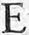
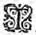
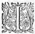
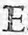
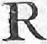
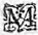

Éd.
Éd. de 1619, 211 recto sic 209 recto.
CE Chevalierqui avoit estéque Paris avoit
trouvé aupres du Temple d'Astree ayant pris le mesme chemin que
Paris
avoit faict, se trouva bien tost sur le pont de la Bouteresse, et peu apres sur le haut de la plaineη
qui découvre le chasteau et la grande ville de Marcilly. D'abord le pays luy sembla tres-agreable : car d'un costé il voyoit les fertiles montagnesmontaignes de Cousant, qui descendant par de petites colines jusques dans la plaine monstroient toute leur crouppeη
enrichie de vignobles,
et le plus haut de grands bois de haute fustaye, qui sembloient avoir esté posez là par la sage Nature pour leur servir de cheveuxη : La plaine apres s'alloit estendant jusques à Montbrison, et suivant tousjours ces delectables colines s'eslargissoit du costé de Surieu, de Mont-Rond et de Feurs, avec tant de petits ruisseaux et de divers estangs, que la veuë ainsi diversiffieediversifiée en estoit beaucoup plus plaisante : et parce que le chemin qu'il avoit pris le conduisoit à Marcilly, y ayant la teste tournée de ce costé , ce fut aussi le premier lieu où il jetta les yeux. Ce chasteau relevé sur la pointe d'un rocher, et qui se faisoit voir de fort loing, remit incontinent en sa memoire le lieu où la premiere fois il avoit veu Madonthe : car sa grandeur, ses tours, et la somptuosité du bastiment avoit beaucoup de ressemblance avec le lieu où elle souloit demeurer. Ce souvenirη luy remit devant les yeux les agreables journees qu'il avoit passees aupres d'elles, et les extrémes ennuis qui l'avoient accompagné depuis sa disgrace : Et parce que ceste comparaison ne se pouvoit faire sans apporter un grand trouble en son ame, ce pauvre Chevalier fut enfin contraint de mettre pied à terre au premier ombrage qu'il rencontra, où laissant son cheval entre les mains de son Escuyer, il s'alla estendre sous un arbre, et haussant les yeux auxau Ciel demeuroit de sorte ravy en ceste pensée, qu'il me voyoit ny n'oyoit chose quelconque qui se fit autour de luy. L'Escuyer qui aymoit passionnément son maistre, et qui ressentoit jusques en l'ame, la miserable façon de vivre de ce Chevalier,
maudissoit en son cœur et l'Amour et celle qui en estoit la cause : Et de fortune
au mesme temps qu'il despitoit le plus, et contre l'un et contre l'autre, il ouyt une voix qu'apres avoir escoutée quelque temps il cogneut estre d'un Chevalier qui se plaignoit et de l'ingratitude et de l'inconstance d'une Dame : et parce qu'il jugea que ceste excuse seroit bonne pour retirer son maistre de ces importunespromptes
et fascheuses pensées : - Seigneur, luy dit-il, oyez je vous supplie ce que chante ce Chevalier qui est aupres de vous :
- Et que veux tu, luy respondit-il, que je me soucie des affaires d'autruy ? ne te semble-t'il
pas que je sois assez chargé des miennes ?
- Celles "
d'autruy, repliqua
l'Escuyer, nous soulagent "
quand nous nous en *sçavonspouvons bien servir : "
A ce mot, ils ouyrent que le Chevalier qui estoit aupres d'eux chantoit ces vers.
En se plaignant de sa Dame,
il les
blasme toutes.
I.

ELle a changé mon feu, la volageη
qu'elle est,
Pour une moindre flame,
Pour faire voir à tous qu'elle est femme en effeteffect ,
Et que c'est qu'une femme.
II.
Mais devois-je pretendre en cet esprit leger
Amour moins passagere ?
Car puis qu'elle estoit femme, il faloit bien juger
Qu'elle seroit legere.
III.
L'Onde est moins agitee, et moins leger le vent :
Moins volage la flame,
Moins prompt est le penser que l'on va concevant,
Que le cœur d'une femme.
IIII.
Ah ! je ne me plains pas de me voir offencerη
,
Ny qu'elle se retire :
Mais
qu'estant une femme,
il faloitqu'une femme estant, je devois bien penser
Qu'encore elle estoit pire.
V.
Dieux ! quel fut le peché que l'homme avoit commis,
Quand on fit la Pandore ?
Pour certain il fut grand, puis que ses ennemis
Vous faictesfaites qu'il adoreη
.
VI.
Nostre fier ennemy, ce sexe avec raison,
O Dieux ! se peut bien dire,
Si nous faisant languir et mourir en prison,
Il ne faictfait que s'en rire.
VII.
Il se mocque de voir, que l'homme qui se dit
Avoir tant de courage,
Languissant en prison, n'a le cœur ny l'esprit
De sortir du servage.
VIII.
Il se mocque de voir que l'homme qui ça bas,
Par raison est le maistre
IX.
Cruelle engeanceengence , helas ! le Ciel pour nostre ennuy
T'a de beauté pourveuë,
Puisque tu ne t'en sers
qu'au mal-heur de celuy
Qui peu sage t'a veuë.
Le Chevalier oyant blasmer de ceste sorte contre raison toutes les femmes, pour la faute que quelqu'une pouvoit avoir commise, fut grandement offencé contre celuy qui parloit si indiscretement : et luy semblant que de le souffrir sans vengeance, et de laisser ces blasphemes impunis, c'estoit commettre une grande faute contre la belle Madonthe, à l'heure mesme il eust mis la main à l'espée pour l'en faire desdire, et crier mercy des injurieuses paroles qu'il avoit proferées, n'eust esté qu'il pensa estre plus à propos de luy donner occasion de le rechercher du combat : - Parce, disoit-il, que s'il a du courage, il ressentira l'offense, et en voudra avoir raison, et s'il n'en a point, il me seroit trop honteux de le combatre. En ceste resolution, le Chevalier se releva, et se tournant du costé de ce Chevalier, apres avoir quelque temps pensé à ce qu'il devoit
dire, haussant la voix le plus qu'il peust, et prononçant le plus distinctement qu'il luy estoit possible, il se mist à chanter tels vers :
Que sçachant le changement de sa
Dame,
il devoit ou mourir, ou
guerir de despit.
I.

TOy qui d'une beauté regretes l'inconstance ;
Et qui de son erreur vas les autres blasmant :
Sois avec moins d'amour ou moins de sentiment,
Et de l'oubly te sers, ou de la patience.
II.
Oublie ou ses beautez, ou mesprise l'outrage,
Si ton cœur y consent, il est desja guery ;
Et s'il en faict refusfait reffus ,
tu dois estre marry
De ton mal beaucoup moins que du peu de courage.
III.
Tu ne fus onc blessé que d'une esgratigneure :
Car deslors qu'on te dit son cruel changement,
Si vrayement tu l'aymois, devois-tu pas Amant,
Ou guerir du despit, ou mourir de l'injure ?
IIII.
De l'Amour offencéoffensé ne chercher la vengeance :
" C'est estre par ses loix complice du forfaict,
" Et qui s'estonnera si cét Amour t'a faict
Partager à la peine aussi bien qu'à l'offense ?
V.
Cesse donc une fois, cesse donc de te plaindre,
Soit pour jamais ton feu dans le despit estaint,
Si tu plains toutesfois, plains toy de t'estre plaint,
Et d'evanter ton feu quand il le faut esteindre.
Ces vers furent chantez si haut et si clairement que celuy qui en avoit esté cause les ayant bien entendus, ne peut croire qu'ils n'eussent esté dits contre luy ; et parce que c'estoit l'un des plus audacieux Chevaliers de toute la contrée, il en conceut un si grand despit, que sans attendre plus longuement se laçant le heaume, car il estoit armé de tout le reste, il s'en vint à travers les arbres où il avoit ouy la voix : L'autre, qui attendoit de voir quel ressentiment il feroit de ceste responce :response soudain qu'il l'ouyt venir, prit aussi son habillement de teste, et s'appuyant sur son Gesse l'attendit, resolu s'il ne se ressentoit de ces paroles, d'y en adjouster de telles, qu'il luy peust donner subjectsubjet de venir au combat : mais l'arrogance de celuy contre lequel il avoit affaire, estoit telle qu'il ne falloit pas beaucoup de peine pour le faire venir aux mains, tant pour la confiance qu'il avoit en sa force et en son adresse, que pour estre neveu de Polemas, l'authorité duquel estoit tellement accreuë depuis le depart de ClidamantClidaman et de Lindamor, qu'il luy restoit fort peu pour se rendre Seigneur absolu des Segusiens. Ce Chevalier s'appelloit Argantée, surpassant de sa taille la commune hauteur de ceux du païspays , et tellement bien proportionné de tout
le reste du corps, qu'il estoit aisé à juger qu'il estoit de grande force, et de grand courage. Il avoit recherché fort long temps une des Nymphes de Galathée, et qu'il fut vray ou non, tant y a qu'il s'estoit figuré d'estre aimé d'elle : elle se nommoit Silere, tres belle et tres-bien aparentée : mais lors qu'il voulut la presser de quelque tesmoignage de bonne volonté, et qu'elle refusa de luy en donner, suivant son humeur
outrecuidée, il voulut user d'une certaine authorité sur elle, qu'elle ne peut trouver bonne, et choisit plustost de rompre entierement d'amitié avec luy, que de supporter plus long temps son arrogance. Luy qui se vid tout à coup trompé de son esperance, entra en si grande colere contre elle, qu'il en conceut une haine incroyable contre toutes les femmes, et depuis ce temps ne cessa d'en dire tous les maux qu'il se pouvoit imaginer.
Argantée
donc suivant sa coustume, s'approchant plein d'arrogance du Chevalier sans le saluer et sans faire action de civilité : - Est-ce pour moy, luy dit-il, Chevalier, ce que tu viens de chanter ? L'estranger qui n'estoit guere endurant de son naturel, et desja fort mal satisfait de luy : - Fay, luy ditdict -il, tout ainsi que si c'estoit pour toy.
- Je voy bien, adjousta
Argantée, et à tes armes, et à ton langage que tu es estranger : car si tu me cognoissois, tu me parlerois d'une autre sorte : Mais puis que cela est, ou monte à cheval, ou mets la main aux armes comme tu es, et je te feray cognoistre ta folie et ta temerité.
- Il ne faut point, dit l'estranger, perdre le temps, et pour ce,
tout à pied queη
nous sommes, nous aurons bien tost vuidé nostre different, et je m'asseure que tu avoüeras, que je te cognois mieux que tu ne me cognois pas. A ce mot il se jette dans le grand chemin, où ayant donné son gesse à son Escuyer et pris son escu, il mit l'espée en la main, et l'attendit d'une façon si asseurée, qu'Argantée jugea bien qu'il devoit estre gentil
Chevalier.
Lors qu'ils estoient prests à commencer leur combat, ils ouyrent un grand bruit de chevaux et de chariots, qui venoient de Marcilly droit vers eux, cela convia Damon de dire, qu'il luy sembloit plus à propos de se rejetter dans le bois, et laisser passer ceste troupe, de peur d'estre interrompus.
Mais Argantée qui se doutoit
bien
que c'estoit
Galathée, ou
Amasis, et qui "
estoit bien ayseaise de faire ostentation de sa force "
et de son
adresse : - Non, non, dit-il, Chevalier, il "
ne faut jamais se cacher que pour
mal faire ; en ceste contréeη
l'on n'est point empesché de faire les actions bonnes et genereuses : et pource ne perdons point le temps comme tu dis, si ce n'est que le cœur te manque à soustenir et demesler ta querelle.
- Ma querelle, dit-il, est si juste, que quand en toute autre occasion je n'aurois point de courage, j'en prendrois pour celle-cy, non seulement contre toy, mais contre tous les hommes du monde : Mais si comme tu dis, il se faut cacher pour les mauvaises actions, je ne sçay où tu pourrois trouver un lieu assez retiré pour toy qui soustiens une chose si fausse et tant indigne de l'ordre de Chevalerieη
que l'on t'a donné,
puis que tu blasmes les Dames, que tout Chevalier est obligé de maintenir, de servir et de deffendre.
- EhEt mon amy, respondit Argantée en se mocquant, et depuis quand, laissant l'estat de Chevalier, es-tu devenu harangueur sur les grands chemins ?
- C'est avec celle-cy, dit-il, luy monstrant son espée, que j'ay accoustumé de haranguer, et si tu as le courage, tu verras si je ne sçay pas mieux faire que tu ne sçaysçais bien dire.
A ce mot, il s'avance l'espée haute, et l'estranger le va rencontrerr'encontrer
couvert de son escu, et plein d'un si grand despit, pour les reproches
qu'il luy avoit faites, qu'il sembloit que le feu luy sortoit des yeux : et là ils commencerent l'un des plus furieux combats qui se peut voir entre deux Chevaliers. A peine s'estoient ils donnez les premiers coups, que toute la troupe qu'ils avoient ouyouye
venir, arriva sur le mesme lieu : et parce que le combat se faisoit au milieu du chemin, et que tous recogneurent
Argantée, ils s'arresterent pour voir quelle en seroit l'issuëla fin .
Galathée
qui estoit celle qui alloit dans ces chariots avec ses Nymphes, hayssoit comme aussi toutes les autres Dames, l'arrogance d'Argantée, et eussent bien voulu qu'elle eust esté chastiée par cétcest estranger : mais d'autant qu'elles sçavoient bien la grande force qu'il avoit, elles craignoient fort pour le Chevalier incogneu, encores que sa belle presence,
et le commencement du combat donnastη
une fort bonne opinion de luy ; Et parce que
Galathée
vid
Polemas
aupres de son chariot, elle l'appella, et luy demanda,
qui estoit celuy qui combatoit contre Argantee, et quel estoit le subjectsubjet de leur querelle, et qu'il seroit peut estre bien a propos de les separer : A quoy il respondit, que ce seroit leur faire tort, que de leur empécherempescher de finir leur differend, puis qu'ils combatoient sans supercherie, et que pour sçavoir qui estoit le Chevalier, et d'où venoit leur querelle, il ne voyoit là personne qui le sçeust dire, que cét Escuyer estranger. Polemas fit cette response, parce qu'il croyoit qu'asseurément Argantee seroit vainqueur, ne se pouvant persuader que l'estranger fust tel, qu'il peust luy faire resistance : et il estoit bien aiseayse que Galathee vist la force et l'adresse de ceux qui estoient à luy. Elle suivant la curiosité des Dames, et desireuse de cognoistre cét estranger, fit appeller l'Escuyer, auquel elle demanda qui estoit le Chevalier estranger, et d'où venoit leur querelle ? - Le subjet de leur combat, respondit-il, Madame, est fort juste du costé de mon Maistre, car oyant que cét autre Chevalier disoit mal des femmes, il ne l'a peupu endurer, semblant que c'est contrevenir à l'ordre de Chevalerieη . Quant à vous dire quel il est, je suis bien marry qu'il me soit deffendu : mais je m'asseure qu'aussi-tost qu'il aura finy le combat, s'il vous plaist, Madame, de le sçavoir, il a trop de courtoisie pour ne vous obeyr. Polemas sousrit l'oyant parler de cette sorte, et comme par mocquerie luy dictdit , - Tu as raison Escuyer mon amy, de dire que Madame le sçaura apres le combat : car si l'on veut mettre son Epitaphe sur son tombeau, il faudra que tu nous le die : - Seigneur Chevalier, luy respondit-il,
si mon maistre n'estoit sorty d'entreprise plus dangereuse que celle-cy, il ne seroit pas venu de si loing qu'il a faict : et à ce mot se retira au lieu où il souloit estre.
Durant tous ces discours, les Chevaliers avoient continué si furieusement leur combat, et
Damon avoit tant de desir d'en venir à bout avec de l'honneur, qu'il n'y avoit celuy des assistans qui ne l'estimast pour un tresbon Chevalier, et mesme
Galathee
et ses Nymphes, aux yeux desquelles se lisoient leurs contentemens, quand
Damon
avoit quelque avantageadvantage , ce quequ' elles ne vouloient point dissimuler, encores que
Polemas
s'en prist garde, puis que c'estoit pour leur sujetsubjet que ce combat se faisoit.
Il y avoit desja plus d'une demie heure qu'ils avoient commencé, et leurs armes estoient en plusieurs lieux rompuës et descloüees, lors qu'Argantee
se ressentit un peu las, et commença de n'aller plus si legerement, ny de frapper de si grands coups : au contraire,
Damon
sembloit non seulement de se maintenir tousjours aussi frais, mais de redoubler et sa force et sa legereté, ce qui estonna grandement Polemas, mais plus encores
Argantee,
qui en son cœur estima beaucoup plus son ennemy qu'il n'avoit faict :fait mais peu apres que l'espee de l'Estranger atteignoit presque à tous les coups sur la chair, on vid entierement affoiblir
Argantee, fust pour la perte du sang, fust pour les incommoditez des blesseures qui estoient grandes. Alors
Polemas
se repentoit à bon escient de n'avoir empesché ce combat, et eust bien voulu que quelque
bon demon eust inspiré Galathee pour l'interrompre. Elle qui jugea bien le desplaisir qu'il en ressentoit, encores qu'elle ne l'aymastaimast point, voulut toutefois luy donner cette satisfaction, pour le respect du service qu'il faisoit à sa mere : Et ne jugeant pas qu'elle peust mieux separer ces Chevaliers, que de les en prier elle mesme, elle mit pied à terre, et avec une grande quantité de ses Nymphes, s'approcha des combatans, à l'heure qu'Argantee ne se pouvant plus soustenir estoit tombé sur un genoilgenoüil, et sembloit qu'à la veuëvenuë de ces belles Nymphes, il s'estoit mis expres à genoux pour leur demander pardon du mal qu'il avoit dictdit des femmes : mais parce qu'il sembla à Polemas que Galatee alloit trop lentement, et que son neveunepveu qui tomboit desja, seroit du tout des-honoré s'il retardoit d'avantage : il fit signe à quelques-uns des siens, qui soudain à course de cheval allerentalloient pour heurter Damon, qui ne se doutant de cetteceste supercherie, n'y eust point pris garde sans le cry de Galathee et des Nymphes, auquelη tournant la teste, il vid venir sept ou huict Chevaliers l'espee en la main qui le menaçoient. Tout ce qu'il peutpût faire fut de se reculerretirer vers son Escuyer, et gauchir au hurt des chevaux le mieux qu'il put :pût mais sa disposition fut tres-grande et admiree de tous, puis que sortant de ce long combat où il avoit bien eu le loisir de se lasser, aussi tost que ces Chevaliers furent passez, et que son Escuyer luy presenta son cheval, il sauta dans la selle sans mettre le pied àdans l'estrieu : Aussi ne luy falloit-ilMais il ne luy falloit pas moins de diligence pour se garantir de l'outrage
qu'ils luy vouloient faire : car à peine avoit-il pris et ajusté la bride de son cheval, qu'il les eut tous sur les bras, quelque deffence que Galathee leur sçeust faire, qui se trouva bien empeschee avec ses Nymphes parmy tous ces chevaux. Quant à
Polemas, il feignoit de ne point voir cette confusion estant aupres d'Argantee, où il faisoit l'empesché à commander qu'on le mit à cheval pour le faire promptement emporter. Cependant les Chevaliers assaillirent de sorte l'Estranger, qu'encores qu'en deux coups, il en mit deux hors de combat, si est-ce qu'il ne peutpût si bien faire qu'il ne fust un peu blessé a l'espaule, et que son cheval ne luy fust tué de plusieurs coups qu'ils luy donnerent dans les flancs. L'estranger qui le sentit deffaillir soubssous luy, se demeslant des estrieux, sauta legerement en terre, et ce qui luy servit de beaucoup, fut que les autres chevauxη
ne vouloient point approcher du sien qui estoit mort : toutesfois il luy estoit impossible de se sauver à la longue, sans le secours inespéré qui luy survint.
La Nymphe qui voyoit faire un si grand outrage à ce Chevalier, ne pouvant le supporter, crioit et menaçoit ceux de
Polemas : mais l'un d'entreentr' eux qui les conduisoit, et à qui il avoit fait signe, sçachant bien la volonté de son maistre, et faisant semblant de ne point ouyr GalatheeGalahee, commandoit tousjours qu'on tuast le Chevalier, lors que de fortune l'un des Lyons de la fontaineη
de la Verité d'Amour cherchant à manger, s'en vint parmy ces chevaux : il estoit si
grand et si espouvantable, que tous les chevaux lors qu'il vint à passer parmy eux, en prirent une si grande frayeur, qu'il n'y eut ny Chevalier, ny Escuyer qui peust estre maistre du sien : Au contraire ronflant de peur, et se jettant dans les bois et travers les hayes, les emporterent bien loin de là sans s'arrester, mesmes celuy de Polemas et de l'Escuyer de l'estranger prenant le frain aux dents, s'en allerent jusques dans la ville de Boën, sans que ny ponts, ny passages estroits les en peussent empescher ; ceux qui estoient attelez aux chariots en eurent une si grande frayeur, qu'en despit des cochers ils se mirent en fuitte, et ne s'arresterent qu'à plus d'une lieuë de là, sinon ceux qui verserent, lesquels encores ils trainerent tous versez de telle furie qu'ils les mirent presque du tout en piecespiece , et les roüages et attelages des autres furent si mal traittez, qu'il leur fut impossible de les r'amenerramener de ce jour-là. Quant à Argantee, on l'avoit mis à cheval, mais il luy fut impossible de s'y pouvoir tenir dessus, ayant esté abandonné de tous ceux qui le tenoient, de sorte qu'aux premiers eslans que le cheval fit, il tomba à terre si malheureusement pour luy, qu'il se tordit le col ; ainsi finit le plus glorieux et arrogant Chevalier de toute la contree : et son cheval de fortune venant de frayeur heurter l'estranger, il se donna sans qu'il y pensast de l'espée dans le corps, et alla tomber mort auprez de son maistre. La Nymphe loüa Dieu de ceste rencontre, car elle sçavoit bien que ce Lyon ne luy feroit point de mal, estant enchanté de telle sorte
qu'il ne pouvoit offencer personne, sinon ceux qui vouloient espreuver l'avantureη . Et toutefoistoutesfois peu apres elle ne fut pas sans crainte, car le Lyon qui n'estoit venu que pour chercher a vivre, voyant le cheval mort de l'estranger, se jetta dessus pour s'en saouler : Mais le Chevalier qui en avoit receu tant de bons services, pensa que ce seroit ingratitude, ou faute de courage, de le laisser devorer sans le deffendre : Il s'avanca donc l'espee haute pour le frapper, ce que voyant la Nymphe, et craignant que le Lyon ne se mist en furie, et n'offençast ce Chevalier, elle se mit à crier, et a le supplier de ne le point frapper : mais luy qui en toute façon ne vouloit point souffrir ceste indignité, ne laissa de marcher droit au Lyon, et parce qu'il avoit le dos tourné, il ne le voulut frapper par derriere, mais le huant le fist tourner de son costé. Le furieux animal se voyant menacer avec l'espee qu'il tenoit haute, fit un saut à costé, comme s'il eust voulu aller vers ces belles Nymphes : ce que craignant le Chevalier, il ne fut guere moins prompt à courre entre deux, si bien que le Lyon qui se le trouva encore au devant, fist un grand rugissement, et battant de sa queuë le terrain, et roüant les yeux ardens, faisoit semblant de luy vouloir sauter dessus, et sans l'enchantement qui l'en empeschoit, il n'y a point de doubte qu'il l'eust fait : mais cette force estant plus grande que la sienne, il fut contraint de se destourner au petit pas, et s'alleralla paistre du cheval d'Argantee, duquel apres s'estre saoulé, il emporta une partie du reste suivant sa coustume à l'autre
Lyon, qui estoit demeuré a la garde de la fontaineη . Le Chevalier voyant que le Lyon alloit du costé d'Argantee, craignant qu'il ne le voulust devorer, demeura tousjours en garde aupres du corps, ne voulant souffrir qu'un si vaillant Chevalier futfust traitté de cette sorte. Mais lors qu'il le vit partir, il s'en retourna vers les Nymphes, qui ayans veu faire de si genereuses actions à ce Chevalier, l'estimoient toutes grandement : Il s'adressa d'abord à Galathee, la jugeant pour telle qu'elle estoit, tant pour la Majesté qui estoit en elle, que pour l'honneur que les autres luy portoient, et apres l'avoir salüee, il la suppliasupplie luy vouloir pardonner l'incommodité qu'à son occasion elle avoit receue. - Je suis bien marrie de la vostre, luy respondit elle, et bien en colere contre l'indiscretion de ceux qui vous ont assailly tant inconsiderément et en ma presence : mais je vous promets, Seigneur Chevalier, qu'outre le chastiment que vous leur avez donné, je les feray punir comme ils meritent : - Madame, respondit le Chevalier, je serois bien marry que ceux qui sont en vostre service receussent quelque desplaisir pour moy, je desire trop de les servir tous, et au contraire, je vous demande leur grace, Madame, et vous supplie de ne me la point refuser : - C'est a vous, Seigneur Chevalier, dictdit -elle, à la leur donner, s'il vous plaist, puis que c'est vous qu'ils ont offencé, et ces Dames et moy vous avons trop d'obligation pour vous refuser ce que vous nous demanderez, nous ayant bien deffendues de ce discourtois Chevalier, et voulu deffendre de ce furieux
Lyon : mais nous parlerons de cecy une autrefois, cependant il me semble que je vous ay veu blessé à l'espaule, il faudroit pour le moins estancher le sang, attendant que nous puissions estre en lieu où vous soyez pensé. - Madame, respondit-il, cetteceste blesseure dont vous parlez est petite, et ce que vous dites que j'ay fait est peu de chose au prix de ce que je dois, et que je desire de faire pour vostre service : mais puis quepuisque tous ceux qui vous accompagnoient sont escartez, commandez moy s'il vous plaist où vous voulez que je vous conduise, afin que je vous laisse en lieu seur, car à ce que je vois ceste contree a des animaux trop dangereux pour marcher sans bonne garde. Galathee alors se souriant, - Je vois bien, dit-elle, Seigneur Chevalier, que vous estes estranger, puis que vous ne cognoissez pas ce Lyon, il faut que vous sçachiez qu'il est enchanté, de sorte qu'il ne peut faire mal à personne, sinon à qui veut espreuver l'avantureη de la fontaineη qu'il garde, et si vous ne l'eussiez point effarouché, il n'eust pas seulement fait semblant de nous voir. - MalaysémentMal-aisément , dit-il, eusse-je souffert devant mes yeux, qu'il eust mangé ce pauvre cheval qui est mort pour moy, ny moins ce Chevalier, qui encores qu'indiscret estoit toutesfois vaillant et courageux. Silvie qui avoit passé derriere le Chevalier pour voir sa blesseure prit garde qu'elle alloit tousjours saignantseignant , qui fut cause qu'elle dit à GalatheGalathée η , - Prenez garde, Madame, que vos discours ne soient trop longs pour ce Chevalier, car il perd beaucoup de sang : Alors elles s'approcherent
toutes de luy, et presque par force, apres luy avoir détaché le brassal gauche, luy banderent sa playe qui n'estoit pas grande avec leurs mouchoirs, et luy firent une escharpe pour luy soulager le bras avec leurs voiles, et apres luy remirent le brassal comme il souloit estre : Alors Galathée fut d'avis, puis que l'on ne voyoit point revenir leurs chariots de s'en aller au petit pas à
Mont-verdun, où elles les pourroient attendre avec commodité, se doutant avec raison qu'ils se fussent rompus dans quelques precipices : Et parce que le chemin estoit court et fort beau, toutes les Nymphes
apreuverentappreuverent ce qu'elle avoit proposé, et ainsi le Chevalier la prist d'un costé sous lesle
bras, et Silvie de l'autre pour l'ayderaider à marcher : toutes les autres la suivoient sans parler d'autre chose que de la valeur et du merite de l'estranger ; les unes loüoient son combat, les autres blasmoient l'outrage qu'on luy avoit voulu faire, quelques-unes admiroient son asseurance, et quelques autres ne pouvoient assez estimer la deffence qu'il avoit faite pour son cheval mort, et celle qu'il avoit voulu faire du corps d'Argantée, mais toutes desiroient "
passionnément de sçavoir qui il estoit, tant la valeur "
a cela de propre
qu'elle s'aquiert une merveilleuse "
faveur parmy les Dames.
Il n'avoit point encores haussé sa visiere, et marchoit sans faire semblant de le vouloir faire, lors que
Sylvie voyant la curiosité de toutes ses compagnes. - Il me semble, dit-elle, Madame, que nous avons trop d'obligation à ce brave Chevalier pour demeurer plus long temps sans
cognoistre et son visage et son nom, si vous nous le permettez, nous esprouverons sa cour,toisiecourtoisie comme nous avons desja veu sa valeur aussi bien marche t'il avec trop d'incommodité, ayant tousjours la visiere baissée, tout ainsi que s'il estoit encore aux mains avec Argantée ; Le Chevalier sans attendre que Galathée respondit. - Pour mon visage, dit-il, Madame, il ne vous sera point caché quand il vous plaira de le voir, mais pour mon nom, je vous supplie de permettre que je le cele, aussi bien ne le cognoistriez vous pas. Galathée respondit, - Il faut gentil Chevalier, que vous nous contentiez en tous les deux, et vous n'en devez point faire de difficulté : car si vous voulez vous celer, puis que vous dites que vostre nom est si incogneu, aussi bien ne le cognoistrons nous point, et vous nous aurez satisfaites. - Je voy bien, Madame, respondit-il, qu'il est plus ayséaisé de vaincre les Chevaliers pour vaillans qu'ils soient, que de se deffendre des belles Dames. J'useray donc de supplication, et des deux choses que vous me demandez, je satisferay à l'une maintenant, et remettray s'il vous plaist l'autre jusques à ce que nous soyons à Mont-verdun. - Ce sera donc, adjousta Galathée, avec condition que vous m'accorderez encores une chose que je vous demanderay : - Il n'y a rien, repliqua le Chevalier, que vous ne me puissiez commander, et à quoy je ne satisfasse de tout mon pouvoir. Et à ce mot haussant la visiere de son heaume, il parut fort beau, il estoit jeune, et la peine du combat et l'eschauffementeschaufement de la visiere abatüe à cause de
l'haleine, luy avoit donnéη
une si vive couleur, qu'on ne recognoissoit point en son visage la tristesse qu'il avoit dans l'ame, et cela fut cause qu'elles le trouverent toutes si beau, qu'elles desirerent avec plus d'impatience de sçavoir qui il estoit, et n'eust esté qu'ils virent venir la vieille Cleontine avec une bonne troupetrouppe de ses filles Druydes, et quelques Vacies et Eubages, il est certain qu'elles ne luy eussent point donné de delay, et qu'il eust fallu dire non seulement son nom, mais quelle fortune l'avoit conduit icy, ce que Galathée ne luy cela pas : mais il respondit :
- Voyez vous,
Madame, comme l'on "
ne doit jamais desesperer de l'assistance du "
Ciel, et mesmes quand on a la raison de son "
costé ? "
Cependant qu'ils parloient ainsi, la sage Cleontine se trouva si pres, que
Galathée s'avançant un peu, la receut en ses bras, et la tint quelque temps embrassée, luy disant, - Que vous semble ma mere de l'equipage avec lequel nous vous venons trouver ? Je croy
*
pense
que malaysément eussiez vous creu que je vous fusse venu voir de ceste sorte.
- Je ne croiray jamais, Madame, dit Cleontine, que vous preniez la peine de venir vers moy, car lors que vous aurez affaire de mon service, vous me commanderez de vous aller trouver : mais je scay bien aussi que vous honorez assez nostre grand
Thautates,
pour venir visiter avec plus d'humilité encores le sainct lieu, où il luy plaist de rendre ses Oracles.
- J'avouë, dit Galathee, que mon dessein estoit bien de venir icy, mais non pas a pied ny si tost :
- Voila,
" adjousta Cleontine, comme la bonté du
" grand Dieu se recognoist tousjours d'avantage,
" faisant naistre, sans que nous y contribuyons
" rien du nostre bien souvent des occasions pour
" luy rendre de plus grands devoirs que nous n'avions
" pas desseigné, afin d'avoir plus de subject
" de nous faire de nouvelles graces. A ce mot Galathée s'avançaadvança pour salüer les vierges Druydes ; et puis continuant le chemin de Mont-verdun, et ne voyant point Celidée parmy les autres, elle luy demanda où elle l'avoit laissée ?
- Madame, luy dit-elle, il ne fut jamais un plus heureux mariage que celuy de
Tamire et d'elle, et je ne croy pas que ceux qui les verront ensemble ne prennent envie de se marier :
- Et qu'est-ilη
, adjousta la Nimphe, de CalidonCalydon, et comment vit-il avec elle ?
- O Madame ! respondit
Cleontine, il est entierement guery du mal qu'elle luy avoit faictfait , il n'a plus
d'autres penseesη
que d'espouser
Astrée :
- Comment, reprit la Nymphe, Calidon veut espouser Astrée, et elle le veut-elle bien ? et qui est-ce qui traiteη
ce mariage ?
- C'est, dit-elle,
Phocion oncle d'Astrée, et Thamire, qui voudroit bien luy voir des enfans, puis qu'il ne'n' en peut point avoir de son costé. Mais je croy que difficilement ce mariage se fera : car
Astrée en est tant esloignée, qu'il y aura bien de la peine à l'y faire consentir :
- Et pourquoy, dict
Galathée, aymeaymoit -t'elle quelque autre berger ?
- Nous n'oyons point dire, reprit Cleontine, qu'elle en ayme maintenant, mais elle ne s'est pas peu empescher apres la mort de Celadon, de declarer l'amitié qu'elle luy portoit, et mesme
depuis quelque tempsη
, luylui
faisant dresser un vain tombeau.
- Et qu'est-il devenu ce berger duquel vous parlez, dit la Nymphe ? - Je croy, Madame, respondit Cleontine, qu'il y a sept ou huictη
Lunes qu'il se noya ;
- Et pourquoy, dit la Nymphe, luy fit-on ce vain tombeau ?
- Parce, Madame, dit Cleontine, que nos plus sçavans Sarronides et Druydes nous font entendre que l'esprit de celuy qui meurt va errant plusieurs siecles, quand les survivans ne rendent pas ces devoirs de la supulture :sepulture Et d'autant que l'on n'a jamais peu trouver le corps de Celadon, on luy a dresséη
ce vain tombeau
duquel je vous parle :
- Comment, reprit Galathée, lors qu'il se noya, le corps aussi se perdit, et depuis l'on ne l'a jamais retrouvé ?
- Jamais, Madame, dit Cleontine, l'on n'en a peu sçavoir
nouvelle, et s'il ne fautη
pas croire que tous les bergers d'alentour, n'y ayent usé de toute la diligence qu'il estoit possible : car il n'eut jamais berger en ceste contrée qui ait esté mieux aymé, aussi veritablement il le meritoit, et s'il eust eu le bonheur d'estre cogneu de vous, Madame, je m'asseure que vous en eussiez faict le mesme jugement. Et à ce que je puis sçavoir, il y avoit fort long-tempslongtemps que ce berger servoit Astrée : mais si discretement que personne ne s'en estoit aperceu : et cela d'autant moins qu'il y avoit fort peu d'apparence qu'il y deust avoir de l'amour entre-eux, à cause de l'inimitiéη
qu'il y avoit de long-temps entre "
leurs peres. Et d'autant que l'amour qui est couverte "
est beaucoup plus violente, il y a de l'apparence que la leur la devoitη
estre, tant pour ce
subject que pour le merite du berger et de la bergere : car je vous puis bien dire, madame, avec toute verité, que je ne vis jamais rien de plus beau ny de plus accomply que ceste fille : Or Phocion qui est son oncle, et qui comme son plus proche parent en a le soing, veut maintenant la marier à CalidonCalydon, il est veritablement bien gentil berger : mais il y a tant de difference de luy a Celadon, qu'il n'y a pas apparence que la bergere y puisse consentir en ayant encores la memoire si fraische : Et toutesfois CalidonCalydon ne laisse de l'esperer, et se tient le plus pres d'elle qu'il luy est possible : Quant a Thamire, il vit le plus heureux et contant du monde, et dictdit que les blesseures du visage de Celidée estant des tesmoignages de sa vertu, la luy rendent si belle et si aymable, qu'il ne sçait s'il doit desirer qu'elle fust autrement, et en ce contentement il est si satisfaitsatisfaict qu'il ne la peut esloigner d'un pas : je suis bien marrie qu'elle ne soit icy pour avoir l'honneur, toute laide et deffiguréedefigurée qu'elle est, de vous faire la reverence. Mais Astrée, Diane, Philis, et les autres bergeres des hameaux voisins sont cause qu'elle n'y est pas, l'ayant depuis hyerη convieé d'aller de compagnie visiter la fille d'Adamas, qui ne fait que de revenir d'entre les vierges Druydes des Carnutes, et que l'on tient pour l'une des plus belles filles et des plus discrettes de toute la contrée : - Peut-estre, dit Galathée, reviendra-tellet'elle ce soir, et nous pourrons bien la voir encores : - Je le voudrois, respondit Cleontine, mais j'ay grande peur que ThamireThamyre qui l'y a accompagnée ne
soit cause du retardement : car pour peu qu'il soit tard, il ne la laissera pas mettre en chemin, ayant trop de soingsoin
de sa santé : outre que j'ay sçeu que la venerable Crysante
vouloit aussi estre de la partie, et qu'elles la sont allé prendre à
Bonlieu, pour y aller toutes ensemble faire ceste visite.
Ainsi alloit discourant Cleontine, et sans en faire semblant, Galathée apprenoit des nouvelles de Celadon, de l'amour duquel elle ne se pouvoit deffaire,
bien estonnée toutefois de ce que l'on ne sçavoitpouvoit sçavoir qu'il estoit devenu. Et lors repensant en soy-mesme que ce berger n'estant point en ceste contrée, elle avoit accusé à tort Leonide, elle fit dessein de la r'appeller aupres d'elle, et pour cétcest effect se resolut de passer chez Adamas, tant pour l'ameneremmener avec elle, que pour l'esperance qu'elle avoit d'y rencontrer ceste Astrée, de laquelle elle avoit tant ouy parler, afin depour juger si sa beauté estoit telle, qu'elle peust convier Celadon de mespriser si fort la sienne. Et en ces pensées elle ne peut s'empescher de souspirer assez haut ; dequoy
Cleontine
s'appercevant : - Que veut dire cela, Madame, luy demanda-t'elle, je vous oy souspirer, avez vous quelque chose qui vous fasche ?
Galathée
qui ne la vouloit pas pour secretaire de ses pensees, luy respondit, - Je souspire ma mere, parce que je suis en peine de
Clidamant, vous sçavez le lieuη
où il est, et s'il n'y a pas occasion de craindre pour luy : Plusieurs jours sont passez qu'Amasis
ny moy n'en avons point de nouvelles, et depuis quelque temps les Vacies nous advertissent que la plus-part des victimes lors qu'ils
viennent à visiter les entrailles, se trouvent deffaillantes aux plus nobles parties ; De plus, j'ay eu tout plein de songesη
fascheux : Je vous asseure que toutes ces choses me tiennent en peine, et ma mere qui est encores plus aprehensive que je ne suis pas, a trouvé bon que nous fissions des sacrifices, et que je vinsse consulter cét Oracle, où je pensois venir au retour de Bon-lieu, où j'allois faire faire quelque sacrifice aux Dieux infernauxη
*
au lieu d'elle, qui avoit ce dessein ce matin, mais qui depuis, empeschée de quelques affaires qui luy sont survenuës, m'a commandé
" d'y aller en sa place. - Madame, respondit alors la
" sage
Cleontine, nostre grand Tautates est si
" bon, que quand nos erreurs le convient à nous
" chastier, il fait ce qu'il peut pour nous en advertiravertir ,
" afin que la crainte du mal futur nous fasse
" tourner vers luy, et qu'avec sacrifices, supplications,
" et amendemens, nous appaisionsη
son ire,
" et nous divertissions les chastimens preparez
" en de nouvelles graces. C'est pourquoy, Madame,
" il ne faut pas mespriser ces advertissemens :avertissemens
" car lors que cela advient, il appesantist d'autant
" plus sa main sur nous, que nous avons eu peu de soing de ses advisη
.
Qu'Amasis et vous preniez donc bien garde à ces demonstrations, puis qu'il faut croire qu'asseurément elles ne sont point faites sans raison : et repassez devant vos yeux vos actions, et s'il y en a quelqu'une que vous puissiez juger n'estre pas bonne, reprouvez-la vous mesme, sans attendre que ThautatesTautatesle fasse un peu plus sensiblement : Apres considerez ce qui se fait en vostre maison, et s'il y est
offencé en quelque chose, reformez-la en sorte que cela ne se commette plus : Enfin jettez l'œil sur toute la contree, et avec diligence vous informez des abus qui s'y commettent, pour chastier ceux qui en sont les autres autheurs, car l'Estat où
le vice demeure impuny, et la vertu sans loyer, "
est bien tost desolé. Sçachez, Madame, que le "
Prince et son Estat ne font
qu'un corps, duquel "
le Prince est la teste, et comme tout le mal que le "
corpsη
ressent luy vient de la teste, de mesme "
tout le mal que souffre la teste luy procede du "
corps, Je veux dire aussi que comme ThautatesTautates "
chastie le peuple pour les fautes que commet le "
Princeη
, de
mesme il punit le Prince, pour celles "
que son peuple commet. Voila, Madame, le conseil que je vous puis donner, et lequel je ne vous ay peu taire, pour le
deubdeu
de la vacation
que je fais.
Galathee remercia avec beaucoup de courtoisie la sage Cleontine, et luy promit de non seulement penser souvent à ses prudentes remonstrances, mais de les representer encores à
Amasis, afin de les ensuivre : Et apres elle adjousta que l'accident qui venoit de luy arriver la troubloit beaucoup : car outre la mort d'Argantee, l'insolence de Polemas en sa presence luy estoit si desplaisante, qu'elle en estoit blessee bien avant dans l'ame :
- Madame, luy respondit
Cleontine, il faut bien souvent excuser les premiers "
mouvemens, car ils ne sont pas en nostre "
puissance : et si nous ne supportons entre nous "
les deffauts de l'humanité,
comment voulons "
nous que Thautates les nous
supporte ?
- Mais, dit "
Galathee, contre un estranger et qui avoit raison, et puis en ma presence ? Croyez, ma mere, que c'est une hardiesse qui procede d'autre chose que de courage, et que cela me fait juger qu'il se tient pour si puissant, qu'il pourroit
" bien encores entreprendre quelque chose de pire.
- A la
" verité, dit Cleontine, quand le sujetsubject perd ce naturel
" respect qu'il doit à son seigneur, ou il le
"
faictfait par faute de jugement, ou pour se sentir si
" puissant qu'il n'en craint point l'indignation, et c'est à quoy il faut bien prendre garde.
Avec de semblables discours elles arriverent en la maison de la sage Cleontine, où
Galathee entra tant pour se reposer, que pour faire penser l'estranger, auquel toutes ces Nymphes ne pouvoient faire assez d'honneur et de demonstration de bonne volonté. Et mesme
Silere, qui en une autre saison eust eu moins agreable sa victoire lors qu'Argantee n'estoit point sorty avecenvers elle des termes de lasa discretion : mais depuis que son amour s'estoit changee en medisance, elle luy avoit
pris
une haineη
si grande, qu'elle eut bien le courage de le voir mort sans luy donner une
" seule larme, tant l'injure presente efface aisément
" les services passez. Le Chevalier fut incontinent desarmé et visité par les Mires, qui ne luy trouverent que la seule blesseure de l'espaule, qui estoit encores si petite qu'ils n'en firent point de cas : seulement ils luy conseillerent de demeurer au lict ce jour là à cause du sang qu'il avoit perdu, tant par les chemins que durant le combat. Galathee
qui desiroit
avant que de partir de ce lieu de faire
faire le sacrifice qu'elle avoit resolu pour consulter l'Oracle, envoya querir desles taureauxη
et autres choses necessaires pour le lendemain matin, puis qu'alors il estoit trop tard, et mesme que le Chevalier estranger la supplia qu'il peustpeut en mesme temps consulter l'Oracle, et joindre ensemble leurs sacrifices, elle le permit pour le gratifier en cela, encores que ce ne fustfut pas bien
la coustumeη
, et cependant envoya de tous costez pour faire venir ses chariots, et faire chercher l'Escuyer du Chevalier incogneu.
Apres qu'ils eurent disné, et que chacun estoit attendantη
des nouvelles de ceux qui s'estoient escartez, Galathee s'estant assise au chevet du lict du Chevalier, voyant qu'il y avoit un grand silence dans la chambre, elle luy dictdit : - Il me semble, Seigneur Chevalier, qu'encores que nous vous ayons toutes beaucoup d'obligations du combat que vous avez fait contre l'outrecuidé
Argantee en nostre faveur ; toutefoistoutesfois vous nous estes encores obligé de quelque chose : car lors que nous vous avons prié de hausserη
vostre visiere, nous vous avons ensemble supplié de nous dire vostre nom, et quelle fortune vous a conduit en ceste contree, vous avez bien satisfait à l'une de nos requestes en vous laissant voir : mais l'arrivee de la sage Cleontine vous a empesché de satisfaire à l'autre partie de nostre demande ; et toutefoistoutesfois si vostre combat nous avoit faictes desireuses de voir vostre visage, vous
devez croire que la veuë que vous nous en avez permise nous a augmenté l'envie d'entendre qui vous estes, afin de sçavoir à qui nous avons tant d'obligation,
et quel subject vous a faict venir icy pour vous y servir, si nous en avonsavions le moyen : Maintenant que nous sommes de loisir, et qu'il ne faut craindre que le parler puisse nuire à vostre blesseure, nous vous redemandons l'accomplissement
" de cetteceste debte.
- Je n'avois jamais ouy
" dire, Madame, respondit le Chevalier en sousriant,
" que demander quelque chose à une personne l'obligeast de la donner.
- Sortez en cela d'erreur, repliqua la Nymphe, car il faut que vous sçachiezsçachez , Seigneur Chevalier, que c'est un particulier privilege des Dames de cetteceste contree,
" et vous sçavez bien que l'on est obligé aux
" lois du pays où l'on se trouve.
- Il est vray, Madame, dictdit -il, mais la difficulté que j'en fais n'est point sans raison, ne me pouvant imaginer que ce vous soit chose agreable d'ouyr la miserable
fortune du plus desastré
Chevalier qui vive, si toutesfois on doit appeller vivreη
, de trainertraisner ses jours entre toutes les infortunes et les miseres
qu'un homme puisse jamais rencontrer.
- Vous ne devez pour cela faire
difficulté, luy dit Galathee, de nous dire vos desplaisirs, à nous, dis-je, qui ne desirons que de vous servir.
- Madame, interrompit il, s'ils estoient contagieux, vous auriez bien occasion de les craindre.
- Non, non,
" Seigneur Chevalier, reprit-elle, chacun porte
" son fardeau, et je m'asseure qu'en toute cette
ceste " compagnie, il n'y a celuy qui ne pense en avoir
" le plus grandη
,
ne laissez donc de nous descouvrir
" vostre blesseure, quelquefois quand on la dictdit , on rencontre des
" personnes qui donnent l'esperance
des remedes inesperez.
- Ce ne sera jamais l'esperance
η
des remedes de guerison, repliqua-t'il, qui me fera monstrer la mienne, sçachant bien que mon seul remede est en la mort : mais seulement pour vous obeyr, et pour satisfaire à la curiosité de ces belles Dames. Et lors se relevant un peu sur le lict, il reprit de ceste sorte :
De l'Histoire de Damon,
et de
Madonte.

" toutesfoistoutefois si en la violence du mal il peust estre
" permis de jetter quelque souspir, non pas pour
" se douloir, mais seulement pour tesmoignage
" que l'on le ressent, ne vous estonnez point, Madame, je vous supplie, si en
la suitesuitte de ce discours, vous me voyez quelquesfois contraint de souspirer par le souvenir de tant d'infortunes ; et croyez que si ce n'estoit vostre expres commandement je n'aurois garde de vous raconter ma miserable vie, et dont le souvenir ne me peut apporter qu'un rangregementrengregement de mes peines.
Sçachez
donc, Madame, que je suis d'Aquitaine, eslevé par le Roy Thorrismond, l'un des plus grands Roys qui ait commandé sur les Vissigots, Prince si bon et si juste qu'il se faisoit aymer de sesdes peuples d'Aquitaine, comme s'ils eussent esté Vissigots. Ce Roy se pleut à relever sa Cour par dessus *tous les autres roys ses voisinstoutes les autres , fust par les armes, fust par la gentillesse et civilité de ceux qui demeuroient pres de sa personne : De sorte que nous estions une bonne troupe de jeunes enfans, qui fusmes nourris pres de luy aussi soigneusement que si nous eussions esté les siens propres. De cestecette mesme volée fut Alcidon, Cleomer, Celidas, et plusieurs autres, qui tous sont reüssis
tres-accomplis Chevaliers : Je fus donc nourry parmi eux, et puis dire que cestecette
nourriture est la seule apparence de bonne fortune que j'aye recogneu en toute ma vie : Mon pere qui s'appelloit Beliante, et qui par sa vertu s'estoit acquis une grande authorité prez de Thierry,
et telle qu'il fut grand
Comte de son EscuyerEscuyerie η , me laissa orphelin que j'estois encores au berceau, commençant la fortune dés ce temps-là la persecution que depuis elle a tousjours continuée : car ne voulant pas que je me prevalusse du credit que mon pere s'estoit acquis, elle me l'osta que j'estois encores au tetin, et ma mere bien tost apres, craignant comme je crois que le bien *que ceste ennemie fortune qu'elle leur avoit faitfaict , si j'eusse esté en un aage capable de le sçavoir conserver, ne futfust demeuré entre mes mains, *aymant mieux, la cruelle qu'elle estoit, me donnerainsi me donna occasion de porter le dueil dans le berceau, et avec mes langes mesmes. Au sortir de mon enfance, je tournay les yeux sur une belle Dame, le nom de laquelle je desireroisvoudrois fortbien de taire aussi bien que le mien, pour ne point descouvrir entierement mon mal. - Non, non, interrompit Galathée, il faut que nous sçachions et son nom et le vostre, comme la chose que nous desirons le plus : - Je vous diray donc, dit-il, que je m'appelle Damon, et elle Madonthe. - Comment ? reprit incontinent la Nymphe, ce Damon qui a servy Madonthe fille de ce grand capitaine Aquitanien nommé Armorant, qui fut tué en la bataille d'Attila sur le corps du vaillant Roy Thierry, et que Leontidas avoit prise pour la faire espouser à son Nepveu ? Vous estes ce Damon qui poussé de jalousie se batit contre Thersandre, fort peu de temps avant la mort de Thorrismond. - Je suis, respondit froidement le Chevalier, ce mesme Damon duquel vous parlez, c'est à dire, le plus infortuné Chevalier qui vive, et
qui ait jamais vescu :
- Vous m'estonnez infiniment, dit-elle, car il y a long temps que chacun vous tient pour estre mort : et de fait, vostre Escuyer n'apporta-t'il pas un mouchoir plein de vostre sang à vostre maistresse, ou plustost à la meschante Leriane, pour tesmoignage de vostre mort ?
- Il est vray, respondit le bergerη
avec un grand souspir, mais la fortune qui ne me vouloit pas tenir quitte a si bon marché, ordonna que je vivrois pour avoir encor un peu plus de loisir de me faire du mal.
- Vrayement, ditdict la Nymphe, il y en a plusieurs de bien trompez, car l'opinion de vostre mort est telle par toutes ces contrées, que l'on ne tient rien de plus certain : Et je me souviens que quand la nouvelle en vint icy, et que l'on racontoit vos Amours, vostre jalousie, et vostre mort, plusieurs vous plaignoient, non seulement pour vous estre perdu pour un si mauvais subjectsubjet , mais encoresencore pour n'avoir point vescu un peu d'avantage, pour voir la vengeance que l'on prit peu apres de la cauteleuse et meschante
*
malicieuse
Leriane, leur semblant à tous que vostre fidelité et vostre affection meritoient bien que vous partissiez de cestecette vie pour le moins avec lacette satisfaction de sçavoir l'innocence de la pauvre
Madonte. Mais comment est-il possible que vous soyez sauvé, et que je vous voyevous soyez
maintenant icy ?
- Madame, respondit le Chevalier, puis que vous sçavez toutes ces choses aussi bien que moy, je veux dire tout ce qui m'est advenu jusques au combat de Thersandre, et à l'opinion de ma mort, je ne m'amuseray donc point d'avantage
à les vous redire, et seulement puis qu'il vous plaist me le commander, je vous raconteray ce qui s'est passé depuis, ce qui me fera passer sous silence une grande partie de ce que j'avois à vous dire, *et abreger par ainsi une grande partie de mes cruelles peines.
Il est certain que je sortis du combat que j'avois eu contre
Thersandre blessé en divers lieux, mais entre les autres, j'avois deux tres-grandes playes qui me donnoient esperance d'en mourir, ne voulant plus vivre, puis que celle pour qui seule la vie m'estoit chere, m'avoit si cruellement trahy. En ce dessein, je prenois les chemins plus escartez, pensant que le sang venant à me deffaillir, à la fin j'acheverois cestecette malheureuse vie : Et avec cestecette
resolution, lors que je me sentis deffaillir, je commanday à
Halladin mon Escuyer, de porter à
Madonte la bague que j'avois ostée à
Thersandre, et à
Leriane ce mouchoir plein de sang : L'un pour luy monstrer à celle que j'aymois, qu'elle avoit eu tort de le preferer à moy une personne qui le meritoit moins :
et l'autre, pour saouler s'il se pouvoit la cruauté de
Leriane : Je cogneus bien par la response qu'il me fit, que si par deffaillance je demeurois entre ses mains, il me porteroit en lieu où il me feroit guerir par de soigneux remedes en despit que j'en eusse : CesteCette cognoissance fut cause que me sentant deffaillir, je m'efforçay de gaignergagner
la riviere de la
Garonne, et de fortune en un lieu où la rive estoit si haute, et de tant en tant si pleine de poinctes desde rochers qui s'avançoientadvançoient , que je creus asseurément que me
laissant aller en bas, je serois en pieces avant que je puissepeusse
donner dans l'eau : mais mon fidele Escuyer qui n'ostoit jamais l'œil de dessus moy, recogneut mon dessein à mes yeux comme je croy, qui demonstroient l'horreur de la mort prochaine, et pour m'en empescher s'avança pour me retenir. Voyez, Madame, que c'est qu'un homme desja resolu de mourir, de peur que j'eus qu'il ne me retint, je fis un si grand effort pour me jetter promptement en bas, que mon salutsault
fut tel, que je ne touchay point les poinctes avancees des rochers, tant j'allay
" avant dans le fleuve : Ainsi la fortune se plaist
" à se servir pour un contraire effect des choses
" que nous faisons à autre dessein :
car l'extreme desir que j'avois de mourir, se peut dire avoir esté cause de m'empescher de mourir. Mon Escuyer cria et courut bien promptement à moy, mais ce fut en vain, car encores qu'il me prit par un bout de ma juppe, le bransle que je m'estois donné fut si grand, que ne me voulant point lascher, je l'emportay avec moy dans le precipice, et ce fut bien un miracleη
comme il ne se froissa
contre ces rochers, car ne s'estant pas eslancé comme moy, il tomba parmy ces pointes, que je pense les Dieux l'avoir voulu
" sauver tant inesperément, pour apprendre aux
" autres qu'ils n'abandonnent jamais ceux qui
" se jettent dans les perils pour secourir leurs maistres. Il tomba donc dans le fleuve sans rien rencontrer, mais si estourdy de la hauteur de sa cheuttecheute, et du danger où il estoit, que sans prendre garde à ce que je devenois, il ne pensa plus
qu'à sortir du fleuve, ce qu'il fit quelque temps apres avec beaucoup de peine, et ayant tant avalé d'de l' eau qu'il estoit à moictiémoitié noyé. Quant à moy, n'ayant ny la force, ny la volonté de me sauver, je fus incontinent englouty de l'onde, où je perdis à mesme temps toute sorte de cognoissance : mais parce que ce fleuve est grandement impetueux, aussi tost que le courant m'eut pris, il m'emporta à plus d'une demie lieuë de là, tantost dessus et tantost dessous l'eau : et sans doute je ne me fusse point arresté, que je ne fusse entré dans la Mer, sans quelques Pescheurs qui de fortune alloient par la riviere avec leur petits bateaux : Ils me virent de loinloing , et ne pouvant au commencement juger ce que c'estoit, le desir de gain les convia de se separer, l'un d'un costé, et l'autre de l'autre, pour ne mele point faillir : mais quand je fus un peu plus prés, ils recogneurent que c'estoit une personne, et lors outre l'asseurance du gain, esmeus de charitable compassion, ils me jetterent ainsi que je passois aupres d'eux certains crochets attachez à une longue corde, qui de fortune se prirent dans mes habits, et puis me retirant peu à peu me joignirent à leur petit bateau, et me conduisirent au bord, et m'estendirent sur le sable, où m'ayant despoüillé, ils virent les grandes blesseures que j'avois, et qui paroissoient encores toutes fraisches. Ils furent à la verité bien estonnez : mais plus encores quand foüillantsfoüillant dans mes poches ils mey trouverent quantité d'argent, et aux doigts trois ou quatre bagues de valeur : il y en eut un d'entr'eux qui dit, - Ce jour est notre bonheur,
ou nostre malheur entierement : car voicy dequoy nous faire riches pour le reste de nos jours : mais si la justice en est advertie, et que nous n'en ayons rien ditdisions rien ,
l'on nous accusera de sa mort, et l'on dira sans doute, que c'est nous qui l'avons tué ; si nous le disons toute ceste richesse nous sera ostée, et encore ne sçay-je si l'on ne nous blasmera point d'en avoir recelé, par ainsi de quelque costé que nous nous tournions, il y a bien du peril pour nous. Tous furent en cestece
mesme doubte, et ne sçavoient
à quoy se resoudre, lors qu'un dentrd'entr 'eux qui avoit un peu de resolution
d'avantage : - Freres, dit-il, enterrons-le dans ce gravier le plus avant que nous pourrons, gardons pour nous le bien que
Tautates
nous a envoyé sans en vouloir faire part à ceux qui sans doute nous l'osteroient tout, nous sommes bien asseurez que nous ne sommes point coulpables de ceste meschanceté, ne l'estans point, soyons encores plus certains que
Dieu
ne delaisse jamais les innocens, c'est pourquoy partageons entre tous quatre ce que nous avons trouvé, et si quelqu'un de la troupe veut faire autrement, je suis resolu avec la part qui me viendra, de m'en aller et passer à mon ayse le reste de ma vie : Soudain que celuy-cy eust parlé de ceste sorte tous les autres l'approuverent, et
soudain mirent la main à l'œuvre. Avant toute chose, ils se mirent à faire la fosse pour m'enterrer, et ne voulurent point partager ce qu'ils avoient trouvé qu'elle ne fust faite, afin que chacun y travaillast de meilleure volonté.
Cependant qu'ils se hastoient de la finir, il y eut un vieil Druyde,
qui voyant ces Pescheurs
de loin, eut opinion qu'ils partageoient leur pesche, et parce qu'il faisoit une vie fort exemplaire, ne vivant que d'aumosnes, jeusnant presque tous les jours, il estoit honoré et respecté de chacun : Ce bon vieillard en ses jeunes ans avoit comme les autres suivy les folles apparences du monde : mais ayant espreuvé combien les promesses en estoient menteuses, il s'estoit retiré de la frequentation des hommes, au sommet d'un petit rocher, qui estoit sur le bord de ce fleuve, et pour vaquer plus librement à la contemplation, s'estoit entierement deffait de tous les biens qu'il avoit eus de ses ancestres, action qui l'qu'il avoit rendu si estimable en toute ceste contrée, qu'il estoit craint et redouté comme un vray amy de Tautates. Ce Druyde donc voyant ces pescheurs ainsi le long du gravier, vint sur son petit asne, leur demander quelque chose de leur pesche : ils estoient si attentifs à leurleurs ouvrage, qu'ils ne se prirent garde de luy qu'il ne fust assez pres d'eux, pour recognoistre que c'estoit un corps despoüillé, et non pas du poisson comme il avoit pensé. Je ne sçay lesquels ne η furent plus estonnez, ou eux de le voir si proche, qu'il estoit impossible de me cacher, ou luy de se rencontrer à un meurtre : car il creut incontinent que c'estoient eux qui m'avoient tué ; et cela d'autant plus que s'aprochantapprochant d'avantage, il voyoit le sang encores tout vermeil, car de temps en temps il en sortoit tousjours quelque goutte : mais quand il fut arrivéaupres d'eux , et qu'il vid les blesseures toutes fraisches et toutes sanglantes, il commença de les reprendre rudement
et de les menacer du chastiment et de Dieu, et des hommes : Pensez vous mal-heureux que vous estes, leur dit-il, que quand vous cacheriez ce corps dans le centre de la terre, la justice de ThautatesTautatesne le fasse pas descouvrirdécouvrir à la veuë de tous ? Et pensez-vous que la vengeance que ce sang crie devant son throsnethrone ne vous atteigne en quelque lieu de l'Univers où vous puissiez vous enfuyr ? Combien estes vous insensez pour un miserable gain qui vous trompe, d'avoir commis une si execrable meschanceté ? Eux qui n'estoient pas meschans, comme ils monstrerent bien depuis, et qui portoient un tres-grand respect à ce Druyde, se jetterent à genoux devant luy, l'asseurantsasseurant qu'ils estoient innocens de ce sang, luy raconterent comme ils m'avoient retiré de l'eau, et quel estoit leur dessein, qu'il pouvoit bien juger que les blesseures qu'il voyoit en ce corps ne pouvoient estre faictes sans armes, et qu'ils n'en avoient point, et que quand ils l'avoient veu venir vers eux, s'ils eussent faictfait ceste meschanceté, ils s'en fussent fuïsfuys aysément, et passé de l'autre costé du fleuve pour se sauver : mais qu'ils l'avoient expressément attendu pour leur justification, en cas qu'à l'advenir l'on les en voulust accuser : ce bon-homme considerant toutes ces raisons, commenca de prendre opinion qu'ils disoient vray, et pour le mieux recognoistre, se fit descendre, et s'approcha de moy, et voyant les blesseures si fraisches : - Mais m'asseurez-vous, dit-il, que vous estes innocens de ceste mort ? - Nous vous le jurons, dirent-ils, par le Guy sacré de
l'an neuf. - Vous estes doublement punissablespunissable , si c'est vous qui l'avez commis, continua-t'il, que si vous ne l'avez pas fait, vous ferez bien d'en rechercher les homicides : car sans doubte ils ne doivent pas estre loing d'icy, et s'ils ne se trouvent, il est dangereux que vous n'en soyez accusez : Et parce que je ne voudrois que des innocens eussent du mal, ny que des malfaicteursmalfaiteurs demeurassent impunis : Dites moy, où sont les habits qu'il avoit quand vous l'avez trouvé ? Eux alors, comme si desja ils eussent esté entre les mains des Juges, sans plus se souvenir de la resolution qu'ils avoient faitefaicte , luy representerent non seulement ce qu'il demandoit, mais aussi tout ce qu'ils avoient trouvé ; fust de l'or ou des bagues. Alors le bon Druyde, - Je croy veritablement, dit-il, que vous estes innocens, puis que si librement vous monstrez ces choses precieuses, et soyez certains que Dieu vous aydera, soit en cestecette occasion, soit en toute autre, tant que vous vivrez en cestecette preud'homie, et soudain se jettant à genoux et leur faisant signe qu'ils en fissent de mesme : - O grand ThautatesTautates ! s'escria-t'il, joignant les mains en haut, et tenant les yeux contre le Ciel, qui as un soing particulier des hommes, destourne de notre chef la vengeance de cestecette mort, et vueilevueilles par ta bonté amender ceux qui l'ont commise. Et parce que mes blesseures saignoient de moment a autre, il leur dictdit qu'il falloit me laver, et finir le pitoyable office qu'ils avoient commencé pour me mettre en terre, et qu'ils fussent asseurez que quoy que le soupçon fut grand contrecontr' eux,
toutesfoistoutefois le Dieu tout-puissant ne les delaisseroit point. Que quant à ce qu'ils avoient trouvé sur moy, ils le gardassent fidellementfidelement sans le partager entreentr' -eux, affinafin de le rendre, si les parens du mort le venoient recognoistre, que si personne ne le demandoit, ils s'en pourroient servir comme d'un present que le Ciel leur avoit voulu faire, à condition de me le rendre en l'autre vie. A ce mot, il se baissa pour, encores que foible, s'ayderaider à me rendre ce dernier et pitoyable office, et leur demanda une piece d'or, pour selon la coustumeη me la mettre dans la bouche quand ils m'enterreroient. Ces pauvres Pescheurs tres-aises d'avoir un si bon tesmoing de leur innocence, firent incontinent tout ce qu'il leur avoit commandé : Et le bon Druide luy-mesme me prit entre ses bras pour avoir part à cette bonne œuvre : mais me tenant de cette sorte embrassé, il luy sembla que j'estois encores chaud, cela fut cause qu'il me mit incontinent la main sur l'endroit du cœur, qu'il sentit comme trembler. - Courage, dit-il, mes enfans, je croy que ce Chevalier aura encores assez de vie pour vous descharger de la calonniecalomnie qui vous pourroit estre mise dessus : et que le grand Tautates vous aimeayme , et veut que les coulpables soient chastiez, car il est encores chaud, et je sens que le cœur luy debat : Et lors me laissant un peu aller la teste contre bas, l'eau que j'avois dans le corps commença de sortir en abondance, et le bon Druide prenant leurs mouchoirs, banda mes playes le mieux qu'il peut, et leur commanda d'apporter leurs rames, pour m'en faire
comme un brancart, pour m'emporter plus doucement. Cependant qu'ils y travailloient tous, le bon Druide alla chercher quelques herbes sur le rivage (car il en cognoissoit fort bien la vertu) pour mettre dessus mes playes, et pour me redonner un peu de vigueur : il ne tarda gueres à revenir, et les froissant entre deux cailloux, m'en mit et dans les blesseures et sur le cœur, incontinent le sang s'estanche,
et peu apres elles me donnerent tant de force, qu'estant un peu soulagé de l'eau que j'avois renduë, je commençay a respirer, et le poulx me revint, dont ils furent tous si aises, qu'apres avoir remercié ThautatesTautates, Hesus, Tharamis, et Bellenus, ils me tournerent habiller le plus doucement qu'ils peurent, et m'emporterent sur leurs rames sans que je le sentisse, dans la Celule de cestcét homme de
Dieu, et me mirent dans un lict assez bon, où souloit quelquefois coucher l'un de ses neveux, quand il le venoit visiter, car pour le sien, ce n'estoit qu'un petit amas de fueilles seichesseches , sans autre artifice, ny plus grande delicatesse.
Je demeuray tout le reste du jour sans ouvrir les yeux, et sans donner autre signe de vie, que celuy du poulx et de la respiration. Le lendemain sur la poincte du jour, j'ouvris les yeux, et ne fus de ma vie plus estonné que de me voir en ce lieu, car je me souvenois bien du combat passé, et de la resolution avec laquelle je m'estois jetté dans le fleuve : mais je ne pouvois m'imaginer comment j'avois esté mis en ce lieu : Je demeuraydemeuré
longuement en ceste pensee, et cependant le jour s'alloit esclaircissantesclarcissant , et la fenestre qui
estoit mal joincte et tournee du costé du Soleil Levant, aussi tost qu'il commença de paroistre, laissa entrer assez de clartéclairté en ce lieu, pour me faire voir comme il estoit fait, et cela me donnoit encore plus d'esbahissementη
car toute la chambre sembloit n'estre qu'un rocher cavé, dont la voûte assez mal polie s'entr'ouvroit selon les vaines de la pierre : le Lyerre, qui, ainsi que je vis depuis, servoit de couverture à cette grotte, entroit par les
ouvertures
depar la fenestre et de la porte, et grimpant par le dedans comme par le dehors, sembloit y estre mis expres pour servir de tapisserie : Et parce que je voyois estendu dans le lict toutes ces choses, je voulus m'efforcer de me releverlever un peu pour les mieux considerevoir mieux r : mais il me fut impossible, tant pour la foiblesse, que pour la douleur de mes blesseures. Estant donc contraint de demeurer en l'estat où l'on m'avoit mis, je commençay de taster de la main où je sentois de la douleur, et trouvant les bandages et les choses qu'on m'y avoit appliquées, je demeuray encores plus estonné : Alors ne pouvant m'imaginer comme toutes ces choses m'estoient advenuësavenuës, je m'allois ressouvenant des choses que les estrangersη
nous *racontentfont
des NimphesNymphes des eaux, et des Deesses qui demeurent dans les fleuves, me condamnant presque d'incredulité, de ce qu'autrefois je m'en estois mocqué, et qu'il estoit impossible que
" cetteceste habitation ne fustfut une des leurs : mais
" comme l'esprit vole incessamment d'un penser en
" un autre, et que c'est l'ordinaire que ceux qui
" nous plaisent ou nous desplaisent leplus, sont
ceux qui nous reviennent le plus souvent en la memoire, je me ramentus la cause de mes desplaisirs, et l'ingratitude de Madonte : Souvenir qui me toucha si vivement le cœur, qu'il m'arracha un assez grand souspir, pour estre ouy du bon Druide qui estoit assis à la porte, attendant qu'il fustfut
heure de me venir voir : soudain qu'il m'ouyt, il entra dans la chambre, et sans dire mot, apres m'avoir un peu consideré, s'en alla ouvrir la fenestre pour mieux voir en quel estat j'estois, et puis s'approchant de moy, me toucha le poulx, et l'endroit du cœur, et me trouvant beaucoup amendé, monstra de s'en resjouyr, et puis s'assiant
dans une chaire qui estoit cavee dans le rocher au chevet de mon lict, apres m'avoir quelque temps regardé, et jugeant que l'estonnement estoit celuy
qui m'empeschoit de parler, il me tint un tel langage :
- Mon enfant, autant que le grand Dieu a faictfait paroistre de vous aymer par l'assistance inesperee qu'il vous a donnee, autant estes vous obligé de le remercier d'une si grande grace, et de vous rendre obeyssant à tout ce qu'il
vous commandera : car comme la recognoissance "
que nous
avons des biens que nous recevons "
de luy, arrache de ses mains de
nouvelles "
graces, de mesme la mescognoissance lesle
rend "
avaresavare
par apres aux gratifications : et liberales, "
ou plustost prodiguesη
aux chastimens. Prenez donc garde à vous, mon enfant, et voyez avec quelles paroles vous le remercierez, et avec quels devoirs vous recognoistrez ce soing particulier qu'il a eu de vous : A ce mot, il se teust
pour ouyr ce que je luy respondrois. Ce bon vieillard avoit la face venerable, l'œil doux, la physionomiephisionomie si bonne, et la parole si agreable, qu'il sembloit que quelque Dieu parlast par sa bouche : toutefoistoutesfois l'estonnement dont j'estois saisi m'empescha pour quelque temps de luy pouvoir respondre : luy qui craignoit que la foiblesse, ou la grandeur de mes playes m'empeschassent de parler : - Mon enfant, continua-t'il, si vous ne pouvez me respondre pour quelque empeschement que vos blesseures ou quelque autre mal vous rapporteraporte , faitesfaictes m'en signe, et vous verrez qu'avec l'aide de Dieu je vous en soulageray : Alors reprenant un peu mes esprits, et pour obeyr à ce qu'il vouloit de moy, je m'efforçay de luy respondre d'une voix assez abatuë telles paroles : - Mon pere, les blesseures du corps ne sont pas celles qui m'ont mis en l'estat où vous me voyez : mais celles que j'ay en l'ame, qui n'attendant autre guerison que celle que la mort a accoustumé de donner aux plus miserables, m'ont fait resoudre de chercher la fin de ma vie dans le creux d'une riviere, qui m'a esté tant impitoyable, qu'elle m'a refusé le secours qu'elle ne nya jamais à personne : Et ces choses sont celles dont je me ressouviens encores : mais je n'ay point de memoire, et c'est ce qui m'estonne, comment je suis hors du fleuve où je me jettay, et comment je me treuve maintenant en ce lieu et en vostre presence. - Mon enfant, repliqua le Druyde, je voy bien que vostre faute et la grace que Tautates vous a faite sont plus grandes encores que je ne pensois pas : car j'avois
eu opinion que quelqu'un de vos ennemis vous avoit traicté de la sorte que vous estes, et que le grand
Dieu
vous en avoit voulu sauver : Mais à ce que je vois, c'est vous mesme qui vous estes voulu procurer la mort, vous mettant en l'estat où vous estes, faute si grande et si execrable devant
Dieu
et les
hommes, que je ne sçay comment il ne vous a chastié en son ire. Car si "
l'homicide d'un frere et le parricide sont de grandes fautes, parce que le "
frere et le pere nous sont proches, quel doit estre le meurtreη
de soy- "
mesme, puis que nul ne nous peut estre si proche que nous nous sommes ? outre que c'est une action vile et indigne d'un homme de courage : car "
celuy qui se tuë, ce n'est que pour ne pouvoir "
souffrir les peines de la vie. Je serois trop long, Madame, si je voulois redire icy toutes les remonstrances qu'il me fit, et lesquelles il eust bien continuees d'avantage s'il n'eust esté interrompu par les pescheurs, desquels je vous ay parlé, qui entrerent tout à coup dans la chambre, conduisant avec eux un homme attaché de cordes, qu'a la verité je ne cogneus pas d'abord, tant pour avoir l'esprit distrait ailleurs, que pour estre à contre-jour, outre que son visage effroyé, et ses habits mal en ordre le changeoient et le desguisoient grandement. D'abord qu'il me vit, il se voulut jetter à mes genoux : mais il ne peutpût ,
parce qu'il estoit attaché. EnfinEn fin le regardant plus attentivement, et oyant dire coup sur coup comme transporté : - Ha ! mon maistre, Ah ! mon maistre, je le recogneusrecognus pour Halladin
mon Escuyer : Si je fus esbahy de le voir en cest estat, vous le
pouvez penser, Madame, car je croyois qu'il fustfut noyé, l'ayant veu tomber aussi bien que moy dans le fleuve : mais je le fus encores d'avantage lors que j'ouys l'un de ces pescheurs, qui s'adressant au Druyde, luy asseura que ç'avoit esté ce jeune homme qui m'avoit mis en l'estat où j'estois, et que non content de m'avoir si mal traicté, il alloit encores cherchant le corps pour le cacher, afin de mieux celer sa meschanceté. Le bon vieillard vouloit parler, lors que l'interrompant, je leur dis : - Non, non, mes amis, vous vous trompez, il est innocent, cét Escuyer est à moy, et je n'en eus jamais un meilleur ny un plus fidelle, laissez le je vous supplie en liberté, afin que j'aye le contentement de l'embrasser encores une fois. Ces pauvres gens bien esbahis, voyansvoyant que je luy tendois les bras avec tant d'affection, le laisserent venir à moy, et lors fondant tout en larmes, il se jette en terre, baise mon lict, et demeure si transporté de joye, qu'il ne pouvoit former une parole : mais quand il fut détaché, je l'embrassay aussi cherement que s'il eust esté mon frere : J'avois bien un extreme desir de sçavoir s'il avoit fait le message que je luy avois commandé, et par quel accident il m'avoit esté amené de ceste sorte : mais je n'osay le faire, de peur de descouvrir ce que je voulois tenir secret. Le Druyde qui estoit sage et discret le recogneut bien : car incontinent apres feignant de se vouloir enquerir en quelle sorte ils avoient rencontré cét Escuyer, il sortit de la petite celule, et les emmenantemmena avec luy, nous laissav laissant tous deux seuls.
Ma curiosité ne me permit pas de retarder d'avantage à luy demander s'il avoit veu MadontheMadonte, que c'est qu'elle et Leriane avoient dit et faictfait , et comment il estoit tombé entre les mains de ces gens : Il me respondit fort au long, qu'il avoit accomply les commandemens que je luy avois faictsfaits , sans y manquer en rien : que tous ceux qui avoit ouy ma mort, me regrettoient grandement, et que s'il eust pensé de me trouver en vie, il m'eust apporté la responceresponse de ma lettre, qu'incontinent apres desireux de me rendre le dernier service, il estoit venu chercher mon corps le long de la riviere, afin de me donner sepulture, en dessein de se retirer apres si loing de ces contrees, et des lieux habitez, qu'il n'ouyt jamais parler de chose qu'il euteust veue ; et ce matin suivant le cours de la riviere, il avoit rencontré ces pescheurs, ausquels il s'estoit enquis de ce qu'il alloit cherchant, et qu'eux apres l'avoir quelque temps consideré, et parlé ensemble assez bas, tout à coup s'estoient jettez sur luy, et l'avoient lié de la sorte qu'il l'avoit veuη ; pensant, à ce qu'ils luy reprochoient, que ce fustfut luy qui m'avoit ainsi traitétraitté : mais que toutefois, quelque demande qu'ils luy eussent faictefaite , il n'avoit jamais voulu dire mon nom, ny chose quelconque qui leur peust faire cognoistre qui j'estois. - Mais, continua-t'il, vous Seigneur, par quelle fortune estes vous venu en ce lieu ? et quel est le Dieu qui vous a redonné la vie ? Et lors joignant les mains, ensemble levant les yeux pleins de larmes au Ciel : - Que bien-heureux, dit-il, soit à jamais celuy duquel il s'est voulu servir pour une
si bonne œuvre. - Halladin mon amy, luy dis-je, je te remercie de ce que tu as fait pour moy, et de ta bonne volonté, et je suis bien ayseaise que tu ne m'ayes point nommé : car je ne veux plus que les hommes sçachent que je sois au monde : Et quant à ce que tu me demandes, par quel moyen je suis venu icy, il faut l'apprendre d'autreautres que de moy, parce que j'en suis aussi ignorant que tu le sçaurois estre : Et toutesfois je te diray bien, qu'encores que le Ciel m'ait conservé la vie contre mon gré, je ne laisse de l'en remercier maintenant que je puis sçavoir par toy des nouvelles de Madonthe. Madonthe que je supplie Dieu de vouloir conserver, et à qui je souhaitte toute sorte de bon-heur, et de contentement. - A Madonthe, dit-il incontinent, vous souhaittez du contentement et du bon-heur. O Dieu, est il possible que vous soyez encores en ceste erreur ! Vous avez ce me semble fort peu de subjet de faire ceste requeste pour elle, ny de vous en souvenir jamais, sinon pour la detester, et pour chercher les moyens de vous venger d'elle, de Leriane, et de Thersandre : mais, cela, si j'estois en vostre place, je le ferois avec tant de volonté de leur desplaire, que je n'en aurois jamais eu tant de faire service à ceste ingrate et mescognoissante. - Si tu estois en ma place, luy respondis-je soudain, tu n'aurois pas la mauvaise pensee que tu as : car sois certain que si je n'estois bien asseuré, que ces paroles procedent de l'affection que tu me portes, je ne te verrois jamais de bon œil, tant elles sont contraires à mon intention, et pource si tu veux estre aupres de moy
jusques à la fin de mes jours (qui sera bien tost, si elle vient aussi promptement que je la desire) je te deffens de me parler jamais de ceste sorte, ny de proferer jamais ces paroles qui offencent sans raison la personne du monde que j'ayme le mieux, et qui merite le plus d'estre aymée et servie.
L'accident qui me survint m'empescha d'en dire d'avantage, pour l'extreme foiblesse où je me trouvay, car je ne sçay si ce fut au commencement pour la joye de voir Halladin, et apres pour la colere où il me mit par ses paroles, mes playes recommencerent à saignerseigner de telle sorte que je devins froid et pasle, et presque sans poulx : Je le recogneus bien dés le commencement, mais parce que je desirois de ne vivre plus, je n'en voulois rien dire, et sans Halladin qui s'en prit garde, me voyant si fort changer de couleur, il est certain qu'à ce coup j'eusse mis fin à mes travaux : mais le fidellefidele
Escuyer s'en courut incontinent vers le bon Druyde, et l'en advertit. Luy qui durant nostre discours avoit preparé ce qu'il me falloit pour me penser, et qui n'attendoit que le terme des vingt quatre heures pour lever le premier appareil, entra soudain dans ma chambre, et me trouvant tout en sang, jugea bien que quelque emotionesmotion extraordinaire en avoit esté la cause : toutesfoistoutefois sans en faire semblant pour lors, apres m'avoir soigneusement pensé, et faictfait prendre quelque boüillon, il ferma sala fenestre, et m'ordonna de reposer un peu, ce que la foiblesse me contraignit de faire, car ceste seconde perte de sang
m'avoit mis si bas, que je ne pouvois remuer une main.
Cependant il tira à part Halladin, luy remit entre les mains
tout ce qu'il avoit retiré des pescheurs, et s'enquiert fort particulierement qui j'estois, et quel accident m'avoit mis en l'estat où il m'avoit trouvé, et là dessus il
luy raconta tout ce que vous avez ouy, Madame, de la
sorte que j'avois esté sauvé : Mon Escuyer le remercia grandement de l'assistance qu'il m'avoit renduë, et l'asseura fort, qu'il ne seroit jamais marry de la peine qu'il y avoit priseauroit employé , qu'il le conjuroit par le grand Tautates de vouloir continuer, et qu'en cela il faisoit une si bonne œuvre, que et
Dieu
et les hommes luy en sçauroient gré : Quant au reste qu'il luy demandoit, c'estoit chose qu'il ne pouvoit sans ma permission, parce que je luy avois deffendu fort expressément : mais qu'il s'asseurast que j'estois tel, que quand il le sçauroit, il ne regretteroit point ny la peine, ny le temps qu'il y auroit employé, ne pouvant pour lors luy dire autre chose, sinon que j'estois des principaux des Aquitaniens :
- Il est doncquesη
Gaulois, luy repliqua-t'il, et non pas
Vissigot :η
- Il est vray, respondit Halladin, mais pour la nourriture qu'il a eu aupres du Roy des Vissigots, il est de sa maison :
- Il me suffit, dit le bon Druyde, je voulois seulement sçavoir quelle estoit la croyance qu'il a du grand
Dieu, parce que j'ay pris garde qu'il est grandement affligé, et soyez asseuré que pour le guerir, il faut commencer sa cure par l'esprit qui est offencé, n'y ayant pas grande apparence de luy
guerir le corpsη
, que la guerison de l'ame ne soit bien avancée ;
- A la verité, mon pere, vous l'avez tresbien recogneu, reprit l'Escuyer, car il est vray qu'il n'y eut jamais esprit occupé d'une si profonde melancolie, que celuy de ce Chevalier : mais je ne croy pas qu'il y ait que deux Medecins de ce mal.
- Et quels pensez vous qu'ils soient ? adjoustaajousta le Druyde.
- L'un, dit "
l'Escuyer, est
Dieu,
qui peut tout faire, et l'autre la "
mort, qui peut tout deffaire :
- Il faut donc reprit le bon vieillard, que nous recourions à
Dieu, et que nous le prions de le vouloir guerir, et qu'il luy plaiseη
se servir de nous pour cestecette guerison.
Depuis ce temps, le bon Druyde eut un si grand soingsoin de moy, qu'il ne m'abandonnoit que le moins qu'il pouvoit, et un jour qu'il luy sembla que j'estois un peu mieux, il me representa tant de choses, et m'allegua tant de raisons, que je cogneus enfin que rien ne nous advient
que par l'ordonnance de
Dieu, lequel nous aymant mieux "
que nous ne sçaurions nous aymer, il n'y a pas "
apparence que tout ce qu'il nous ordonne ne soit pour "
nostre avantage, encores que quelquefois les medecines "
qu'il nous donne soient ameres et difficiles à avaller. "
Soudain que j'eus ceste cognoissance, je perdis la barbare resolution que j'avois de mourir, et me remis et resignay de sorte entre les mains du grand Tautates, que je commençay à trouver toute chose douce, puis que tout me venoit de ceste souveraine bonté. CesteCette resolution me profita de sorte, que bien tost apres je fus hors de danger, et puis dans peu de jours tellement
guery, qu'il n'y avoit rien quime retint de partir sinon la foiblesse : mais elle estoit bien si grande pour l'extreme perte de sang que j'avois faitefaicte , qu'il fallut beaucoup de temps pour me remettre, quelque soing que le bon vieillard, et Halladin
peussent avoir de moy.
Durant ce temps, n'y ayant rien qui m'occupast que mes pensées, je demeurois le plus souvent hors de la petite celuleη
,
avec excuse de prendre de l'air pour me renforcer : mais c'estoit seulement pour n'estre interrompu de personne. Le bon vieillard vaquoit d'ordinaire à ses prieres et contemplations : Et Halladin alloit dans les villes et bourgades voisines chercher les viandes et les choses qui m'estoient necessaires : Et moy cependant j'estois sur le hautη
de ces rochers, tournant tousjours les yeux et le cœur du costé où j'avois laissé
Madonthe, je me souviens
qu'en ce temps-la je m'entretenois souvent avec ces vers :
I.

Les premiers ans de nostre Amour,
C'est le plaisir que mon tourment
Reçoit pour seul allegement.
II.
Mais, que sertsert-il , ô ma memoire !
De rappellerr'apeller incessamment
Le ressouvenir de la gloire
De mon passé contentement ?
Estre descheu d'un si grand-heur,
Accroit à mon mal sa grandeur.
III.
Je me souviens que dans vostre ame
Autrefois vous n'aviez que moy,
Que nous bruslions de mesme flame,
Et ne juriez que par ma foy :
V.
" Une felicité passee,
" Et qui ne peut plus revenir,
" Est le tourment de la pensee,
" Qui la veut encor' retenir :
" Parce que le bien espreuvé
" Fasche plus en estant privé.
Dés qu'il estoit jour, je sortois de ma petite cellulecelule , et à petits pas, allois
gagnant le haut de ce rocher escarpé, où me couchant sur la mousse je repassois par la memoire toutes les choses qui jusques en ce temps là m'estoient arrivees, sans oublier ny bon-heur ny malheur qui ne me donnast un coup tres-sensible : car le
" mal passé me blessoit, comme present, et le bon-heur
" que je n'avois plus comme la perte d'un bien, que je
" pensois m'estre ravy outrageusement. L'apres-disnee, me retirant sous quelques arbres qui n'estoient pas fort esloignez de la petite Celule, je considerois l'estat miserable où la fortune m'avoit reduit, et mon mal, et le bien d'autruy m'offençoient égalementégallement , l'un par le propre
ressentiment, et l'autre par l'envie et la jalousie du contentement de ceux qui me l'avoient ravy : Mais apres soupper, me promenant le long du fleuve, j'allois considerant tous les desplaisirs qui me pouvoient advenir, et combien il y avoit peu d'esperance d'y remedier. Et ainsi
toute la journée estoit separée en trois diverses considerations : Le matin des choses passees, apres le midy, des presentes, et le soir des futures, et quelquefois ces dernieres m'occupoient de sorte que j'y passois la plus grande partie de la nuict, fust que j'y fusse convié par la solitude du lieu, ou par le silence de la nuict, ou par le plaisir que mesme je prenois en mon desplaisirη
Car, Madame, la vie m'estoit bien si ennuyeuse en ce temps là, qu'il n'y avoit rien que *je sceusse desirer j'eusse desiré d'avantage que d'en voir la fin, et m'estant resolu de ne point user du fer
contre moy, je souhaitois que quelque chose peust me rendre ce bon office, sans que l'on me peust accuser d'estre mon propre homicide, et j'avois opinion que si l'ennuy s'alloit accroissant comme il avoit faitfaict depuis peu, il acheveroit bien tost ma vie infortunée, et je me laissois emporter de telle sorte à ceste *opinionconsideration qu'il falloit pour me faire revenir au logis, que le bon vieillard bien souvent me vint querir, ou mon Escuyer.
CesteCeste vie m'estoit si agreable, que je fus plusieurs fois en volonté de quitter et les armes et la fortune,
et m'arrester le reste de mes jours en ce lieu : et en ce dessein, j'en dis quelque chose à mon Escuyer, le conseillant de se retirer avec les biens que la fortune m'avoit donnez, desquels je luy ferois don, et me laisser en ce lieu *mespriserrechercher
les faveurs de la fortune,
qui m'avoit esté si contraire quand elle le devoit estre le moins. Mais Halladin fondant tout en pleurs, ne me dit autre chose, sinon que la mort seule
l'esloigneroit de moy, et qu'il ne vouloit point d'autre bien, que celuy de me servir. Et quelque temps apres qu'il m'euteust mis dans le lict, m'oyant souspirer, il s'approcha de moy, et me ditdict , voyant que je ne dormois point : - Est-il possible, Seigneur, que vous vueillez vous perdre de cetteceste sorte ?
- Ah ! mon amy, luy dis-je, je ne seray jamais si perdu, que l'ennuy et le desplaisir ne me trouveη
bien où que je sois.
- Mais se peut-il faire, me respondit-il, que vous vous soyez tellement oublié de vous-mesmes, et de ce que vous souliez estre, que vous ne vueillez
seulement essayer de revenir au bon-heur que vous avez perdu ?
- Halladin, luy dis-je en souspirant, c'est
" une grande imprudence de tenter une chose que l'on
" sçait estre impossible :
- Et comment, respondit-il, nommerez-vous ce qui vous donne l'opinion qu'il soit impossible, ne l'ayant point essayé, et n'y ayant raison qui vous le puisse persuader ? Quant à moy, continua-t'il, j'ay cetteceste opinion de moy, que tout ce qu'un Escuyer peut faire ne me sçauroit estre impossible, et tiens encore pour plus asseuré, que tout ce qu'un Chevalier peut obtenir,
vous le pouvez encores
si vous le voulez. Qu'est-ce qui vous en peut desesperer ? vous manque-t'il quelque chose, que la seule volonté ? Si ce Thersandre, qui est cause de vostre malheur, eust eu ceste mesme consideration, eust-il entrepris de vous oster Madonte ? Et pourquoy ? si vous
" avez bien peu luy oster la vie, n'avez-vous et le pouvoir
" et la fortune de r'avoir ce qui a desja esté à vous ? Croyez, Seigneur, que ce qui a esté une fois, peut une autrefoisautre fois
arriver, si l'on s'y estudie ?
- Ne sçay tu pas, luy dis-je, que MadonteMadonthe l'ayme ?
- Ne vous a-t'elle pas aymé ? respondit-il :
- Mais, luy dis-je, elle me veut mal.
- Et n'ay-je pas veu,
respondit-il, qu'elle le mesprisoit plus qu'il ne se
peut "
dire,
et le mespris est beaucoup plus esloigné de l'amour, "
que de la
hainehayne ?
- La hainehayne , repris-je, est bien plus "
esloignée de l'amitié que le mespris.
- Il est vray, repliqua-t'il, mais c'est "
d'autant qu'il y a grande difference de l'amour à l'amitiéη
, car l'amour est "
plus glorieux, et jamais ne se prend aux choses mesprisables, mais "
tousjours aux plus rares, plus estimées et plus relevées : Et c'est ce qui "
me fait juger que si Madonte apres avoir tant méprisémesprisé
Thersandre, est venu à l'aymer, elle en peut bien faire autant de vous, contre qui il n'y a que de la hainehayne , n'y pouvant trouver lieu de mespris. - Mon amy, luy repliquay-je, l'amitié que tu me porteportes
te fait parler ainsi à mon avantageadvantage .
- J'en parle, dit-il, comme tous ceux qui sans passion en peuvent parler.
- Et bien, luy dis-je, qu'est-ce enfinen fin que tu voudrois que je fisse ?
- Mon affection seule, me respondit-il, est celle qui me donne la hardiesse d'ouvrir la bouche en cecy : et je vous supplie, Seigneur, de *recevoirprendre mes paroles, comme venant de là. Et puis que vous me le commandez, je vous diray, que je voudrois que vous reprinssiez la mesme sorte de vie que vous souliez faire, afinà fin d'essayer si par quelque rencontre vous ne pourriez point recouvrer le bien qui vous a esté ravy, et la perte duquel vous afflige si cruellement : Car de demeurer icy d'avantage, je ne voy pas qu'il vous en puisse arriver que
du mal : j'ay tousjours ceste opinion que Madonte ne vous hait point, ou si elle vous hait, qu'elle n'ayme pas tant Thersandre que vous pensez, ou si elle l'ayme, que comme elle a changé desja une fois, elle en pourra changer
" une autre : car j'ay oüy dire, que tout change en ce monde : Mais si cela
" advient, et qu'elle croye que vous soyez mort, ce changement ne vous servira de rien, au lieu que si elle vous voit, il est impossible que vos merites ne fassent revivre encores ceste premiere bien-veuillance. Seigneur,
" continua-t'il, esteignez une chandelle, et la rapprochezraprochez un
" peu d'une autre qui soit allumee, vous verrez qu'aussi tost que la fumee de
" la mesche estainte donnera dans la flamme, elle se r'alumerar'allumera
" avec une telle promptitude, qu'il n'y a souffre où le feu se prenne si
" aisémentaysément . Le cœur qui a aymé est de ceste sorte quand il
" est devant la personne aymee, au lieu que l'absenceη
n'oste pas seulement
" tout l'espoir de ce que je dis, mais de plus elle est la ruine et la mort de
" l'amour la plus violente.
- Et bien bien
, luy dis-je, Halladin, nous y penserons, et nous verrons ce que le Ciel nous conseillera : Et me tournant de l'autre costé, je fis semblant de vouloir reposer, et toutefois ce n'estoit que pour ne le vouloir escouter davantaged'avantage , puis qu'il me conseilloit contre l'humeur
solitaire en laquelle j'estois : Mais la lumiere estant esteinte, et ne pouvant si tost m'endormir, je commençay de repenser à tous les discours et à toutes les raisons d'Halladin, et les trouvant assez bonnes, je fis presque resolution de partir de
ce lieu, y estant mesme convié par le puissant desir que j'avois de mourir, car j'esperois que cherchant les adventures qui se rencontrent ordinairement, j'en pourrois trouver quelqu'une qui me conduiroit au trespas. Outre que je prevoyois qu'il estoit impossible de demeurer longuement en ce lieu sans estre recognurecogneu , puis que sans doute ces pescheurs ne pourroient se taire de ce qu'ils sçavoient de moy, et n'estant guere esloigné du lieu où
Torrismond se tenoit, mal-aisémentaysément pourrois-je m'y celer plus long-temps.
Ces considerations, et quelques autres que je laisseη
à dire, pour ne vous estre troptant
ennuyeux, par un sitrop
long discours, me firent prendre la resolution qu'Halladin m'avoit conseillee, et dés qu'il fut jour, je le resveillayrecueillay , et luy dis, que je voulois suivre son advis, qu'il allast en la plus proche ville acheter des chevaux et pour luy et pour moy, et me faire avoir des armes : parce que je craignois, que si j'allois desarmé, je fusse recogneu plus aysément :aisément Il partit incontinent le plus aise du monde, de me voir en ceste volonté : et quoy qu'il usast de toute la diligence qui luy fut possible, si demeura-t'il douze ou quinze jours pour faire faire les armes ainsi que je les luy avois desseigneesdesignees. Durant son absence, je fus encore plus solitaire et particulier que je n'avois jamais esté, et de telle sorte que le bon vieillard s'en estonnoit : J'avouë qu'en ce temps là je disputay souvent en moy-mesme, si je devois rompre et ma prison et mes fers, et que me representant les raisons que la generosité peut
mettre devant les yeux à un homme de courage, je fus quelquefois
esbranlé de les suivre : mais ce trop puissant Amour, et qui n'a jamais trouvé
" personne qui luy ait peu resister, sinon en fuyant, comme par despit, me
" chargeoit incontinent de nouveaux fers, et renoüoit mes chaisnes par de nouveaux moyens, de telle sorte que je cogneus bien qu'il n'y avoit point pour moy d'esperance de liberté. En ces contrarietez, je fis des vers, desquels
je me suis bien souvent consolé, lors que de semblables pensées me sont revenuës devant les yeux : Ils sont tels.
I.

II.
Pour souffrir
sesles
rigueurs, il faut estre insensible,
Ou trouver desles Amants sans cœurs et sans esprits :
Car un homme d'esprit n'entreprend l'impossible, "
Et l'homme courageux ne souffre
cesce mespris. "
III.
C'est errer, si l'on peut avoir ce qu'on desire
Que de s'en retirer pour crainte du trespastrespa ,
Si pour la contenterη
la mort pouvoit suffire :
Nous nous y resoudrions, et ne la fuyrions pas,
IIII.
Mais vieillir en servant, et languir dans l'outrage,
Sans espoir d'obtenir qu'un mespris desdaigneux :
C'est monstrer qu'en effect nostre peu de courage,
Le pouvant supporter, ne merite pas mieux.
V.
Laissons donc cét esprit qu'en aimantaymant l'on offence,
Et de sa tyrannie enfinen fin nous separons :
Que si l'on nous reprenreprend du vice d'inconstance,
Aux loix de nostre honneur sagement recourons.
VI.
Que le ressouvenir de ses rigueurs passees,
Ses beautez et l'Amour arracheη
de mon sein :
Mais Dieu ! qu'il est aisé d'avoir telles pensees !
Mais qu'il est malaisémal-aisé d'en finir le dessein !
VII.
Rompray-je donc mes nœuds et ma prison encore,
Pour ne poursuivre plus ce dessein ruyneux ?
Mais puis-je n'estre point à celle que j'adore,
Et n'est-ce impieté que d'en rompre les nœuds ?
VIII.
Tant de beautez qu'Amour pour soy-mesme souhaitte,
Tant de bon-heurs futurs, tant d'aymables appas :
Bref, la chose du monde au monde plus parfaicte,
Estant devant mes yeux, ne l'aymeray-je pas ?
IX.
Ou bien devant mes yeux souffriray-je au contraire
Qu'un autre l'idolatre, et qu'il s'en dise Amant ?
Et que faute de cœur je ne l'ose pas faire :
Ou que faute d'Amourη
je flechisse au tourmenttourmant ?
X.
Que deviendroient, ô Dieuxη
!
tant de cheres delices,
Et tant de doux plaisirs que nous nous desseignons ?
L'on nous condamneroit ainsi que ses complices,
Si pour faute de cœur nous nous en esloignonséloignions .
XI.
Il n'yraira pas
ainsi, j'ayme mieux qu'on raconteη
,
Que je meurs sans flechir aux coups de sa rigueur,
Que si me voyant vivre, on disoit à ma honte,
Il vit : mais il fustfut mort, s'il en eust eu le cœur.
XII.
Qu'à son gré de mon bien la Fortune dispose :
Que mon malheurmal-heur s'accroisse, ou qu'il dure sans fin,
Si je ne puis flechir le destin qui s'oppose,
Non plus me verra-t'on flechir à ce destin.
XIII.
Je l'adoreray donc ceste beauté cruelle,
Et prendray pour raison l'opiniastreté :
Il vaut mieux ne voir point, que ne voir ceste belle,
Et la voyant n'aymer une telle beauté.
XIIII.
Il semble que l'honneur ce dessein me deffende :
Et que pour vivre en homme,
il faut vivre autrement :
Si l'honneur le deffend, Amour me le commande,
Vive en homme qui veut, je veux vivre en Amantη
.
Les pescheurs, desquels je vous ay parlé, Madame, durant ce temps me venoient voir fort souvent, tant pour sçavoir comme je me portois, que pour
recognoissance de l'argent que je leur avois donné pour leur peine : et parce qu'ils portoient vendre leur poisson une fois la sepmaine dans la ville où Torrismond demeuroit, ils me rapportoient tousjours quelques nouvellesη
.
Il y en eut un qui estoit le plus vieux d'entr'eux, et qui aussi monstroit avoir plus d'esprit que les autres, et auquel je parlois ordinairement, à qui je demanday, que c'est que
l'on disoit en ce lieu là ?
Il me respondit, qu'on ne parloit d'autre chose que de l'accident qui estoit arrivé à une Dame qui avoit fait un enfant : et parce que les loix des Vissigots ordonnoient la punition du feu,
elle y avoit esté condamnee. Voyez, Madame, comme le cœur predit "
quelquefois les choses que nous craignons : encore que je n'eusse jamais "
veu en
Madonte aucune action qui me peut faire soupçonner avec raison, qu'elle eust commis ceste faute, je ne laissay
toutefois de penser incontinent que c'estoit elle, et pour en estre plus asseuré, je luy demanday le nom de ceste Dame, mais il me dit, qu'il l'avoit oublié, bien
m'asseuroit-il, que c'estoit l'une des principales, et qui n'estoit point mariee.
Je tins alors le soupçon pour certain, me remettant devant les yeux l'affection d'elle et de
Thersandre ; et parce que je ne voulois qu'ils se prinssent garde de mon desplaisir, je fus contraint de leur rompre compagnie, et me retirer sous les arbres qui estoient aupres de la
maison : et la estant seul, quelles contraires pensees me vindrent tourmenter ? le desplaisir ou plustost la rage d'avoir esté si vilainement trompé, me faisoit desirer la vengeance de cest outrage : Mais, soudain combien changeois-je promptement de volonté, quand je me representois l'affection que je luy avois portee, et que pour un temps elle m'avoit fait paroistre ? J'avouë que perdant tout desir de vengeance, je ne pouvois retenir les larmes, quand je me figurois la miserable
condition où la fortune l'avoit reduitereduitte . J'eusse demeuré plus long temps en ceste pensee, quoy qu'elle m'entretint jusques au soir, si
Halladin revenant du lieu où je l'avois envoyé ne m'en fustfut venu retirer. D'abord que je jettay les yeux dessus luy, je jugeay bien qu'il avoit quelque chose à me dire, qu'il n'osoit pas, et à cause depour
ce que m'avoit dit le vieux pescheur, je n'avois aussi la hardiesse de la luy demander : je m'efforçay toutesfois enfinen fin : - Et bien Halladin, lui dis-je, auray-je des armes, et des chevaux ?
- Tout est prest, me dit-il, Seigneur, et je croy que vous
aurez esté bien servy, j'ay amené les chevaux icy, et j'ay laissé les armes en un logis au faux-bourg de la ville, où je les ay faictfait serrer ; - Tu as demeuré long-temps, repliquay-je, et il s'en est peu fallufalu que je n'aye perdu patience : mais par ta foy, Halladin, et par l'amitié que tu me portes, dy moy si tu n'as point de nouvelles de Madonte. - Vous plaist-il, Seigneur, me dictdit -il, que je vous die ce que j'en sçay : - Tu me feras plaisir, respondis-je, car j'en suis en peine. - Je crains, repliqua-t'il, que je ne vous y mette encore d'avantage. - O Dieu ! m'escriay-je alors, c'est assez Halladin, c'est assez, mes soupçons sont veritables, elle est condamnee au feu, pour avoir fait un enfant, n'est-il pas vray ? - Qui que ce soit, dit-il, qui vous aitayt apporté ces nouvelles, il vous a dictdit la verité : Mais comment les avez-vous sçeuës ? - Les pescheurs, luy dis-je, qui sont allez vendre leur pesche me les ont ditesl'ont dicte : mais je te conjure Halladin, dy moy tout ce que tu en sçais, et ne m'en cele chose quelconque. - Seigneur, dictdit -il, puis qu'il vous plaist ainsi, je le feray, encores que je voye bien que ceste nouvelle vous desplaira autant qu'elle devroit faire le contraireun contraire effect . Et lors il me raconta, que voyant combien les Armuriers demandoient de temps pour faire mes armes, il creut qu'il auroit assez de loisir pour aller où Torrismond demeuroit, s'asseurant bien que j'aurois agreable qu'à son retour il m'en rapportast des nouvelles. Qu'y estant le plus secrettement qu'il luy avoit esté possible, il n'avoit pas eu grande peine d'en apprendre : parce que toute la ville estoit pleine du
bruit de MadontheMadonte, et que mesme
Leriane avoit esté celle qui l'avoit accusee, et que
Leotaris et son frere soustenoient ce que Leriane avoit dit d'elle, et de Thersandre : - Comment, repris-je incontinent, est-il possible que MadontheMadonte se soit abandonnee à un homme si abaissé ? Halladin qui creut que ceste consideration me la feroit mespriser : - On le tient, dit-il, pour asseuré, et veu les preuves que Leriane en a faictesfaites , il n'y a personne qui le croye autrement.
Je confesse, Madame, qu'oyant l'asseurance de ces nouvelles, je demeuray tellement hors de moy mesme , que si je ne me fusse appuyé sur mon Escuyer, je fusse tombé en terre : En fin m'estant un peu remis, et me retirant un pas ou deux, je croisay les bras l'un dans l'autre, demeurant muet, et tenant les yeux en terre plein de confusion : apres joignant les mains, et levant les yeux au Ciel, je dis avec un grand souspir, - O Dieu ! que tes jugemensjugements sont profonds,
et par combien de voyes nous fais-tu voir la verité des choses cachees ? Et m'estant teu, comme ravy d'admiration, en fin je reprins ainsi la parole : - Il est donc bien vray, MadontheMadonte, que vous avez faict choix de Thersandre pour me le preferer ? Vous avez doncques eu le courage si r'abaissé de faire seigneur de vostre volonté celuy que vos predecesseurs eussent beaucoup favorisé de recevoir pour leur serviteur ? Est-il possible que ce cœur genereux que j'ay veu autrefois en vous, se soit tellement changé, que vous ne mouriez plustost de la honte d'un tel choix, que du supplice qui vous est preparé ? O Dieu ! ô Ciel ! comment
est-il possible que vous l'ayez renduë d'un corps si beau, et d'un esprit si dissemblableη
?
Je demeuray à ce mot fort long-temps sans parler, pour avoir trop de choses à dire, ressemblant en cela à ces vases, "
qui pour estre pleins et versez tout à coup, ne laissent sortir l'eau qu'avec "
difficulté. Halladin qui consideroit toutes mes actions, pensant soulager "
mon mal, et me voyant taire, prit l'occasion de me dire : - Si j'eusse pensé, Seigneur, que cestecette nouvelle vous eust rapporté tant de desplaisir, ce n'eust jamais esté par moy que vous l'eussiez eüe :
- Et comment, luy dis-je, Halladin, pouvois-tu penser que je ne deusse
ressentir la honte et la mort de la personne du monde que j'ayme le mieux ?
- Et comment cela, me respondit-il, puis que c'est la personne du monde qui vous a donné plus d'occasion de la hayrhaïr .
- L'Amour, repliquay-je, est plus grand en moy, qu'aucun outrage, et puis ne sçais-tu que pour "
rompre et l'arc et la fleschefleche , l'on ne gueristguerit pas "
la blesseure qui en a esté faite ? - Si les maladies, adjousta-t'il, "
se guerissent par des remedes contraires, l'Amour qui se produit de la "
vertu et des faveurs, doit bien se guerir en vous par les injures que vous "
avez receuës, et par la cognoissance d'une faute si honteuse :
- Ce qui a fait naistre mon Amour, luy dis-je, c'est le Destin auquel le Ciel m'a sousmis, et pour cepource, il ne faut jamais penser qu'il se change, que le Ciel et le Destin n'en fasseη
de mesme : Et quant à la honte, je suis resolu d'entrer en camp
clos contre ceux qui la calomnient.
- Dieu
ne le vueille pas, Seigneur, me dictdit -il : Car outre que vous
auriez affaire contre les deux plus rudes
Chevaliers d'Aquitaine, encore vous feriez-vous trop de tort, et vous offenceriez grandement le Dieu juste, de prendre une querelle tant injuste.
- Pour la valeur de
Leotaris, et de son frere, luy dis-je, elle ne m'est point incogneuë : Jamais *ellele Ciel ne me divertira du combat : Mais pour l'offenceoffense du Dieu que tu dis, je m'en remets bien à luiluy , qui consent que j'ayme si passionnément MadontheMadonte, qu'il m'est impossible de faire autrement.
- Comment ? s'escria-t'il, vous avez le courage, Seigneur, de prendre les armes pour deffendredefendre la vie de ceux qui vous ont le plus indignement traictétraité ? vous n'avez point de sentiment de tant d'offences : Et vous voudrez que chacun recognoisse en vous cestecette insensibilité ? Ne vous ressouviendrez-vous point, que cependant qu'elle usoit de tant d'insupportables rigueurs envers vous, elle estoit entre les bras de Thersandre, et le combloit des plus estroictesestroittes faveurs que vous eussiez peu desirer ? Vous pourrez, contre
raison exposer vostre vie, pour deffendre celle d'une personne qui ne l'employe qu'à vous mespriser pour le contentement d'uneun
autre. Voulez vous qu'on die que vous vous armez injustementη
pour conserver les plaisirs et les delices de Thersandre ?
Il vouloit continuer, lors que je l'interrompis. - Cesse, luy dis-je,
Halladin, de me tenir ce langage, la pierreη
en est jettee, je suis resolu à ce que je t'ay faictfait
entendre ; et pour tout ce que tu m'as dit, et que tu peux dire, je te veux seulement opposer cestecette consideration : Quand je me represente
la mort de MadontheMadonte, et que je ne verray plus celle que j'ay tant aymeeaymé ,
la peine, et la confusion où elle se trouveretrouve , la honte qui luy est preparee, et que je me ressouviens que c'est elle que
Damon a si longuement servie, que cesses mains que l'on luy doit lier de viles chaisnes, sont celles que j'ay tant de fois baisees avec tant de transport, que cestecette beauté et ce corps que j'ay tant admiré et honoré, sera bien *tostfort profané et jetté dans le feu : ô Dieu !
Halladin, comment penses-tu que je le puisse supporter, ou que ces choses se venantvenans representer à moy, il y puisse avoir quelque mespris ou quelque outrage qui m'empesche de luy donner tout le secours qui peut despendre de moy ? Non, non,
Halladin, il faut ou que
Damon
cesse de vivre, ou qu'il ne cesse point de faire son "
devoir. Celuy d'un Chevalier, c'est de secourir les Dames affligees, si "
celle-cy est accusee avec raison, Dieu
le sçait : quant à nous, nous "
devons tousjours plustost penser le bien, que soupçonner le mal : Et puis Leriane
estant celle qui l'accuse, il faut croire que c'est à tort, ayant la cognoissance que j'ay de la malice extréme qui est en elle. Je veux rendre encores cestecette preuve de mon affection à MadontheMadonte, je sçay bien que tu diras, qu'elle ne m'en sçaura non plus de gré, que des autres services qu'elle a receuësreceus
de moy : mais il n'importe, mon amy, je satisferay à mon devoir, et ce sera la plus grande recompense que j'en sçaurois desirer. L'Escuyer qui m'oüyt parler avec tant de resolution, me dict,dit que puis que je l'avois ainsi delibéré, il prioitprieroit Dieu,
qu'il voulut
benir mes intentions : mais que si je voulois executer ce dessein, il ne falloit pas perdre une heure de temps : parce que le dernier terme que le Roy avoit donné à
MadontheMadonte,
finissoit le lendemain à Midy, et que du lieu où nous estions, il y avoit par le droit chemin pour le moins cinq lieuës jusques en la ville des Tectosages, et plus de huict a passer où estoient mes armes, chemin assez long pour n'y pas arriver à temps, si nous ne partions à l'heure mesme.
Sur cét advis, je me resolus de monter incontinent à cheval, et de peur que le bon Druyde ne me fit perdre du temps, je pensay qu'il valloit mieux partir sans luy en rien faire sçavoir, et apres, si j'estois victorieux, je viendrois faire mes excuses, et le remercier des obligations extremes que je luy avois. Je montay donc à cheval, et avec une tres-grande diligence je me rendyrendis au faux-bourg de la ville où estoient mes armes : je les essayé, et je les trouvay trestrouve qu'elles estoient et -bonnes et bien faitesfaictes , elles estoient toutes noires, et dans l'escu il y avoit un Tygreη
qui se repaissoit d'un cœur humain avec ce mot, TU ME DONNES LA MORT, ET JE SOUSTIENS TA VIE.
Et sans m'arrester, je reprens le chemin de la ville des Tectosages, et fis une si grande diligence, que j'y arrivay un peu avant midy. Je mis pied a terre pour faire repaistre mon cheval, qui estoit à la verité bien las, et cela faillit d'estre cause de la perte de MadontheMadonte : car lors que j'arrivay à la porte du camp, je trouvay que le combat estoit desja commencé : mais d'un Chevalier contre deux, Il est certain que pour peu que
j'eusse retardé d'avantage, et le Chevalier estoit mort, et MadontheMadonte convaincuë : car il tomba esvanoüy, que je n'estois encore entré dix pas dans les barrieres, et s'il fustfut tombé avant que j'y fusse arrivé, le combat estoit finy, et il ne m'eut pas esté permis de le renouveller. Or
Dieu
voulut que j'arrivasse si à propos, afin que l'innocence de cette belle Dame fust recogneuë : car sans que je m'amuse à vous raconter les particularitez du combat, il suffit qu'il pleust à
Dieu
me donner la victoire de ces deux vaillans freres, vaincus plustost par l'innocence de MadontheMadonte, que par force ny vertu qui fust en moy, si ce n'est qu'ayant les armes en la main pour la vie et pour l'honneur de Madame, tout l'Univers ensemble ne me pouvoit resister. Je fus donc victorieux, et lors que l'on le pensoit le moins, la verité fut declaree, la malice de Leriane, l'innocence de MadontheMadonteaveree, l'enfant recogneu pour estre à la Nieceη
de LaoniceLeriane : et bref toutes choses tellement esclaircies, que la meschante
Leriane fut jettee dans le feu qu'elle avoit faictfait preparer pour uneun autre ; MadontheMadonte remise en liberté, et moy sorty de la plus grande peine qu'un homme sçauroit recevoir, par la cognoissance que j'eus qu'elle avoit esté accusee à tort, et que si elle m'avoit outragé, elle n'avoit pas pour le moins manqué à son honneur et à sa pudicité. Ce qui me fut un si grand contentement, que j'estimois toutes les peines que j'avois jamais souffertes en son service estre plus que recompensees.
Voyant donc toutes choses asseurees pour elle,
et me semblant n'estre pas à propos de me faire cognoistre, que je ne sçeusse un peu mieux si elle aymoit Thersandre, ou si tout ce que j'en avois veu, n'estoit point un artifice de Leriane, je m'en vins prés de son eschaffaut pour sçavoir si elle se vouloit servir de moy en quelque autre occasion : Elle me remercia, et me pria de deux choses : l'une, de luy dire qui j'estois : et l'autre, de la conduire en sa maison : Pour luy dire mon nom, je m'en excusay le mieux que je puis : pour la conduite, je l'acceptay, à condition que ce fust promptement. Et parce qu'à mesme temps
il
y eut une grande confusion de Dames qui vindrent se resjouyr avec elle, et que je craignois que le Roy ne me commandast de me declarer, outre que j'avois quelques blessures qu'il failloitfalloit faire penser, je me jettay parmy la foule, et me desrobay : de sorte que chacun estant attentif ailleurs, personne ne se prit garde de moy, qui m'en vins où j'avais laissé mon Escuyer, et là me faisant bander mes playes, et laissant fort peu repaistre mon cheval, je remontis dessus, et m'en revins trouver mon vieux Druyde.
J'oubliois de vous dire, Madame, qu'ayant rencontré aupres de la ville un homme qui s'y en alloit, je le suppliay de faire mes excuses à
Madonte, et afin qu'elle ne me tint pour peu courtois, je feignis d'estre obligé ailleurs par quelque promesse, que toutefois si elle avoit affaire de mon service, elle auroit de mes nouvelles du costé du
Mont-d'or, et que je porterois tousjours l'enseigne du Tygre. Mon dessein estoit de luy faire accroire que j'allois de ce
costé là, encorencore que je ne le voulusse pas faire, de peur que si la curiositéη
du Roy luy
faisoit prendre envie de sçavoir de mes nouvelles, ilelle ne me fit suivre du costé où j'allois pour me recognoistre.
Je ne sçaurois vous representer, Madame, avec quel contentement me receut le bon Druyde, quels furent les remercimensremerciemens qu'il me fit, quand il sçeut le sujetsubjet de mon voyage, et l'assistance que j'avois donnee à MadontheMadonteen une si grande necessité : car il me raconta d'avoir esté eslevé et nourry par son pere, et qu'en ceste action je luy avois surpayé la peine et le soing qu'il avoit eu pour moy : Et parce qu'il vit que mes armes estoient teintestaintes de sang, il me les fistfit oster, me visita de tous costez, et me trouvant quelques blesseures, il printprit
un si grand soin de moy, et y usa de telle diligence, qu'en fort peu de temps je fus guery.
Mais d'autant que le plus grand soulagement que je peussepusse
avoir en cest esloignement, et le meilleur remede pour me guerir, estoit d'avoir des nouvelles de
Madonte, je priay le bon Druide d'envoyer quelqu'un de cesses pescheurs où le Roy demeuroit, pour en aprendre des nouvelles .
Le bon vieillard le fist, et ce pescheur s'en acquita si bien, qu'a son retour il ne m'en apporta que trop pour mon contentement ; L'une fut que MadontheMadontes'en estoit allee en sa maison, où elle avoit enmené
Thersandre tout blessé qu'il estoit : car ç'avoit esté luy qui avant que moy estoit entré tout seul au combat contre
Leotaris,
et son frere : Je sçeus encores, que peu apres le depart de
Madonte, le
Roy Torrismond avoit esté tué
par un Myre, qui le saignant au bras luy avoit coupécouppé la veine, et que son frere
Euric recueilloit la succession et la CourronneCouronne des Vissigots. Pourrois-je bien, Madame, vous representer combien ces deux accidentsaccidens me toucherent vivement en l'ame ? Il seroit bien mal-aisémalaisé , puis que jamais je ne m'en suis ressouvenu, sans de si cuisans desplaisirs, que je ne croy pas pouvoir quelquefois avoir du repos, que dans le profond du tombeau.
Alors tout ce qui me souloit donner quelque allegement augmentoit plustost mes desplaisirs, me semblant qu'il ne falloit plus rien esperer de bien, puis que ceste derniere action ne m'avoit peu rapporter quelque remede : les lieux solitaires me desplaisoient, parce qu'ils me donnoient la veuë de la ville des Tectosages, mes pensees me faisoient mourir, parce que sans cesse elles me representoient l'ingratitude de ceste femme : Bref, je me desplaisois moy-mesme, parce que je l'aymois, ce me sembloit contre raison, et ne me pouvois empescher de l'aymer. En cétcest estat, vous pouvez penser, Madame, quel je devins, mais aussi quel devois-je devenir, ayant tant d'extremes occasions de desplaisirs ? Mes playes à la verité d'autant qu'elles estoient fort petites, se guerirent en peu de jours : mais je devins pasle et deffait, comme une personne morte, et peu apres je changeay ceste pasleur en un teint aussi jaune, que si j'eusse esté lavé avec du saffran.
Halladin
qui avoit apprisapris en partie ce que
Madonte
avoit faict, se doutoit bien du sujetsubject de mon mal, et attendoit l'occasion
de m'en parler : mais le bon vieillard ne sçachant qu'en juger, me conseilla enfin de changer d'air, esperant que l'exercice et le divertissement pourroient me remettre en ma premiere santé. Moy qui mesme me desplaisois d'estre en lieu où je peusse recevoir quelque soulagement des bons avisaccés
de ce sage Druide, je me resolus aisémentaysément de m'en aller par le monde, errant d'un costé et d'autre sans repos, jusques à ce que je peusse rencontrer la mort en quelque lieu que ce fust.
Apres donc avoir remercié le bon vieillard, et recogneu en ce qu'il me fustfut possible, la bonne volonté de ces Pescheurs, je partis sans autre dessein de mon voyage, que de marcher continuellementη
.
Par les chemins toutesfois, d'autant que par mal-heumalheur r le nostre s'adressa du costé de la maison de Madonte, nous sçeusmes des nouvellesη
,
qui rangregerent encore mon desplaisir : car nous aprismes que cestecette mal-avisée, tel estoit le nom que luy donnoit
Halladin, s'en estoit allee, ou plustost desrobee, n'ayant pour toute compagnie que sa nourrice, et
Thersandre. Jugez ce que je devins à ce bruit
ou plustost, Madame, quel je devois devenir ,η
Mon Escuyer s'efforça bien de me representer qu'elle ne me faisoit point de tort, mais à elle seulement ; d'autant que me croyant mort, comme tout le reste de l'Aquitaine, je n'avois aucune occasion de m'en plaindre : mais mon desplaisir estoit si grand, que ne pouvant supporter de voir les lieux où j'avois eu autresfois tant de sujetsubjet de me plaire, et où j'avois maintenant tant d'occasion
*du contraire
de desplaisir, je me resolus de sortir
de l'Europe, et ne cesser de marcher que je n'eusse rencontré ce qui met fin à tous les ennuisdesplaisirs de la vie. Je sortis doncques de l'Europe, passay en Affrique, vis le Roy Genseric, Honorie son fils, et recogneusrecognus enfin que par tout Amour a le mesme pouvoir que je l'avois
" espreuvé en moy ; je veux dire qu'il augmente et diminuë,
" change et rechange les plaisirs et les desplaisirs de ceux
" qui le servent comme il luy plaist, *et tousjours sans s'assujettir a point de raison. Car estant parmy ces Vandales, j'aprisη
les fortunes d'Ursace et d'Olimbre, et celles de Placidie la jeune et de sa mere Eudoxe, femme de Valentinian, lesquelles par leurs exemplestemples ,
ne me divertirent pas d'aymeraimer , mais m'aprirent bien, que qui
" veut aymer se doit preparer et au bien, et au mal, et les
" recevoir tous deux avec un mesme visageη
.
Et considerant les divers changemens de la fortune d'Eudoxe, la longue perseverance de l'amour d'Ursace, la sage conduite du jeune Olimbre, et l'heureuse conclusionη
de leurs Amoursη
, je me resolus de ne me plus tant affliger de la contrarieté que je ressentois en mon affection, et de la supporter avec plus de patience. Et parce qu'Halladin
qui se desplaisoit de mes longs et ennuyeux voyages, me conseilloit avec plusieurs raisons, de ne point aymer d'avantage celle qui ne pensoit pas seulement que je fusse encore au monde, luy semblant que quand il auroit obtenu cela sur moy, je me resoudrois aysément à m'en revenir en Aquitaine, afin de luy en oster l'esperance, je chantois bien souvent ces vers :
Qu'il aymera tousjours.

Bien souvent contre moy j'ay ce poinct debatu :
Mais comme du haut Ciel les Spheres entraineesentreinees
D'un effort violent toutesfois obstinees,
Chacune fait son cours par sa propre vertu.
En fin ne pouvant trouver repos, quelque divertissement que je recherchasse, je pensay que le prudence humaine ne me servant plus de rien, il falloit que je recourusse aux conseils divins,
et ainsi oyant dire, que sur le penchant des Pyrenées, du costé de la mer OceaneOcceane,
il y avoit un Oracleη
qui s'appelloit le Temple de
Venus, je retournay en Europe, et consultay l'Oracle, auquel je demanday neuf jours durant, que c'est qui pourroit donner ou fin, ou remede à mon mal ? Il respondit enfin,
Forests : Et le lendemain luy demandant où estoit ceste Forest, il respondit encores,
Forests : Et depuis, quelque importunité que je luy fisse, l'Oracle fut tousjours muet, de sorte que je me resolus de ne laisser Forests,
que je sceusse, en quelque endroit de l'Europe que je ne visitasse. Je ne vous sçaurois dire, Madame, combien inutilement j'ay en passé de diverses : Tant y a qu'apres avoir couru toutes celles d'Espagne, des Cantabres, de la
Gaule Narbonnoise, et d'Aquitaine, je suis venu en celles des Gebennes, et me resous de voir celle d'Hircinie, des Ardennes, et d'aller par tout où je scauray qu'il y en a : car je ne puis me persuader que ce Dieu, qui est si veritable à tous les autres hommes, vueille estre menteur pour moy seul : au contraire, j'espereη
de trouver
en fin dans ces lieux solitaires le soulagement qu'il m'a promis.
Ainsi finit Damon de raconter l'histoire de sa penible vie, et Galathee, qui en avoit desja ouy une grande partie par les advis que sa mere Amasis avoit eu du Roy Torrismond, fut tres-aise d'en apprendre le reste : et eust bien desiré que ceste contree eust peueut pû luy donner quelque contentement. Cela fut cause que lors qu'il eut finy, elle luy parla de ceste sorte : - J'avouë, Seigneur Chevalier, que c'est avec raison que vous
vous plaignez de la fortune, vous ayant sans raison, affligé si longuement : mais il ne faut pas pour cela que vous perdiez l'esperance de vostre salut : car il est certain que les Dieux ne sont point menteurs, ny abuseurs, et puis qu'ils vous ont donné la responce que vous dites, croyez qu'enfinen fin vous aurez le contentement que vous desirez. Il est vray qu'ils se plaisent à
donner leurs responses ambiguës, et obscures : et cela afin de nous "
apprendre qu'il n'y a nul bien sans peine, et qu'ils sont bien de voir la "
subtilité de l'esprit humain à demesler le sens de leurs Oraclesη
,
et en "
trouver la verité. Que si vous voulez que je vous die mon opinion sur celuy "
que vous avez receu, je croy que vous l'avez tres-mal entendu, quand vous avez pensé que ce mot de Forests signifiast des bois et des lieux solitaires et peuplez seulement d'arbres : car il faut que vous sçachez que la contree où vous estes maintenant, outre qu'on la nomme le païspays des Segusiens, s'appelle encores plus communement Forests, de sorte que je croy que c'est de ce Forests duquel l'Oracle vous a voulu predire le bon-heurη
que vous y devez recevoir : Et pour dire la verité, il y a bien plus d'apparence que ce soit en cestecette contree, que non pas en ces grands bois et lieux solitaires : car il pourroit bien arriver que MadontheMadontey seroit conduitteconduite , pour quelque raison qui vous peut estre aussi cachee que celle qui vous y a faict venir le luy peut estre : et par ainsi commencez à vous resjouyr, et croire que comme "
jamais un mal ne vient seul, de mesme un bien "
est tousjours accompagné d'un autre. C'est un grand heur pour vous "
d'estre parvenu au lieu où l'Oracle vous a predit devoir estre la fin de vos desastres : il sera bien tost suivy d'un second qui vous en fera recevoir l'effect. - Madame, respondit
Damon en souspirant, je voy bien que ce que vous me dites est fondé sur beaucoup de raisonraisons , je le croy maintenant comme vous, et de plus, que veritablement je verray bien l'accomplissement de l'Oracle, qui me promet qu'en Forests je trouveray la fin de mes peines : car j'espere que la Mort fera ce que l'Amour n'a peupû faire.
- MonNon , non, dit la Nymphe, vous devez mieux esperer que cela : et si vous m'en croyez,
parce que vous consulterez demain avec moy l'Oracle de ce lieu, j'espere pour vous que vous en recevrez du contentement, et en ceste opinion je donneray ordre à faire recouvrer tout ce qui sera necessaire pour le sacrifice et pour vous et pour moy : cependant nos chariots et vostre Escuyer reviendront, et vous guerirez à loisir. D'une chose vous veux-je prier, qui est de ne me point laisser que vous ne m'ayez conduitteconduite vers
Amasis ma mere, qui je m'asseure s'essayera de vous faire toute sorte de bonne chere. Le Chevalier luy respondit, Que ç'avoit esté son intention de consulter pour la derniere fois cét Oracle, ainsi que desja il le luy avoit dit ; et que puis qu'elle luy permettoit que ce fustfut avec elle, il le recevoit avec beaucoup d'honneur, comme aussi de l'accompagner vers Amasis,
pour avoir le bon-heur de luy offrir son service. Que quant à l'esperance qu'elle luy donnoit, il l'esperoit veritablement :
mais par le moyen de la seule mort, laquelle ne le viendroit jamais si tost trouver qu'il le desiroit avec passion.
Cependant
Galathee, qui avoit depeschéenvoyé à
Bonlieu vers la venerable Chrysante, pour l'advertir qu'elle y alloit, sceut par le retour de celuy *qu'elle y avoit envoyéqui y estoit allé ,
qu'Astree, Diane, PhillisPhyllis,
et toute la trouppe des bergers y avoit disné, et qu'elles s'en alloient vers Adamas visiter Alexis : Ce messager estoit un jeune homme qui avoit esté nourry dés son enfance en son service : cela estoit cause qu'il avoit une grande familiarité aupres d'elle, et qu'il luy racontoit ordinairement tout ce qu'il avoit veu au lieu d'où il venoit. A ce coup, pour ne pas perdre sa coustume, apres luy avoir faictfait la responceresponse de la venerable Chrysante, il adjousta : - Mais je vous asseure, Madame, que horsmis vous, je ne vis jamais rien de si beau qu'Astree et Diane. Galathee qui estoit bien ayseaise de le faire parler, et d'aprendreapprendre tousjours quelque nouvelle de ces Bergeresbergers , luy semblant que c'estoit quelque chose qui touchoit bien à son aymé
Celadon, et mesme qu'elle n'avoit plus de moyen de sçavoir ce qu'il estoit devenu, que par elleelles . Elle luy dist tout haut et devant Damon mesme : - Et quoy ? Lerindas (c'estoit ainsi qu'il s'appelloit) trouvestrouve -tu ces bergeres si belles que tu les vueille preferer à mes NymphesNimphes ?
- Ce n'est pas moy, dit-il, qui les prefere, c'est la verité :
- Mais, repliqua la Nymphe, comment veux-tu que nous croyons que des filles de village soient si belles ?
- Madame, dit-il, je vous jure que si j'estois Chevalier, je maintiendroisη
leur beauté par tout le monde, et si vous les aviez veuës, je m'asseure que pour vaillante que vous fussiez, vous ne voudriez pas entrer en camp clos avec moy sur une si mauvaise querelleη . Chacun se mit à rire. Et Galathee, - Mais viens-ça Lerindas, dit-elle en sousriant, laquelle te plaist le plus ? - Sans doute, respondit-il, Astree est la plus belle : mais elle est si tristeη , que cela est cause que Diane me plaist d'avantage : et puis les filles qui ayment si fort, ne me plaisent pas tant que les autres. - Et qu'est-ce, reprit Galathee, qu'Astree ayme ? - Vous dis-je pas, Madame, respondit-il, qu'elle est si triste ? Or ceste melancolie, à ce que l'on m'a dictdit , procede de la mort d'un berger qui se noya il y a quatre ou cinqη Lunes.mois - Et Diane, luy dit la Nymphe, n'ayme-t'elle rien ? - L'on dictdit que non, respondit-il, toutesfois, il y a deux personnes apres elle qui la tourmenteront bien, si pour le moins elle ne les aymeaime point : l'un s'apelle Paris, et l'autre Silvandre : Il est vray que si c'estoitc'est à moy d'en faire le chois, je donnerois ma voix à Silvandre, car encores qu'il soit berger, il n'y a rien de plus gentil ny de plus civilisé. - Si tu continuecontinuës , dit Galathee en sousriant , tu nous donneras envie de devenir bergeres pour estre parmy une si bonne compagnie. - Madame, respondit-il, vous pensez vous mocquer ? croyez que pour deux ou trois jours, vous ne les sçauriez mieux employer. Alors Galathee se tournant vers la vieille Cleontine, - Je vous jure ma mere, que j'ay presque envie, luy dit-elle, de demeurer icy deux ou trois jours pour donner loisir aux blesseures de Damon de se guerir,
et cependant passer LignonLygnon, et voir un peu si ce que l'on dit de ces bergeres est veritable.
- Madame, respondit
Cleontine, c'est la plus honnorable, et la plus douce conversation que vous sçauriez imaginer, et croyez qu'elles n'ont rien du villageη
que le nom,
et si vous voulez avoir ce plaisir, vous vous y rencontrerez maintenant comme il faut : car le grand Druyde doit venir faire unle sacrifice solemnelsolennel pour rendre graces à ThautatesTautatesdu Guy salutaire, qui s'est trouvé dans l'estenduë de leur hameau.
- Et quelle ceremonie est celle-là ? demanda Galathee, car pour cueillir le Guy, il me semble que ce n'est que le sixiesmeη
de la Lune de juillet.
- Il est vray, respondit
Cleontine, mais ce sacrifice ne se fait que pour remercier Thautates, d'avoir voulu gratifier ce lieu plus particulierement que les autres, y faisant naistre le Guy salutaire sur le chesne le plus beau, à ce qu'on dit, qui se puisse voir, car c'est signe qu'il a plus ayméaimé ce hameau que les autres du voisinage, le favorisant d'une si grande grace ?
- Et comment sçavez vous, dictdit la Nymphe, que c'est à
ceste
cette heure que le grand Druyde le doit venir faire ?
- Parce, repliqua la vieille, qu'il promit dans huictη
jours d'y venir, et il y en a desja quatreη
de passez, de sorte qu'il ne peut guere retarder s'il veut tenir parole, et s'il sçait que vous soyez en volonté d'y assister, il le hastera tant qu'il vous plaira.
Ces discours firent resoudre Galathee de retarder son voyage de Bon-lieu, tant pour laisser guerir Damon, que pour se trouver avec ces belles bergeres en ce sacrifice : Et parce qu'elle
n'avoit point averty Amasis de ce qui luy estoit advenu, et qu'elle eut peur qu'elle n'en fustfut en peine, elle luy envoya un de ceux de Cleontine, qui luy raconta tout ce qui s'estoit passé, et de plus, le subjet qui l'arrestoit à Mont-verdun, à cause des blesseures de Damon, luy faisant mesme entendre quel il estoit, et le sujectsujet qui l'avoit conduit en ce pays. Soudain qu'Amasis sçeut ces nouvelles, elle reçeut un grand plaisir et un grand desplaisir, car elle fut tres-ayseaise de sçavoir Damon en vie, qu'elle avoit pleuré mort, parce qu'il estoit son fort proche parent, et la discourtoisie de Polemas luy despleut bien d'advantageinfiniment , s'estant mesme adressee contre une personne de tant de merite, et en la presence de sa fille qu'il devoit plus respecter : Et pour monstrer qu'elle luy en sçavoit mauvais gré, elle monta soudain sur son chariot, et sans en rien faire sçavoir à Polemas, ny permettre que l'on en advertit Galathee, ny Damon, elle s'en vint le plus viste qu'elle peut à Mont-verdun, où sa fille bien estonnee l'alla recevoir, et luy demanda, quelle estoit la prompte resolution de son voyage : Elle luy fistfit entendre alors qu'elle venoit voir Damon, et luy offrir tout ce qui despendoit d'elle, comme à son parent, et comme à une personne à qui elle avoit beaucoup d'obligation. Si Damon eust esté adverty de sa venuë à temps, il fustfut sorty du lict pour l'aller recevoir, ses blesseures n'estans pas telles, qu'il n'eust bien peu le faire sans danger : mais estant surpris de ceste sorte, les excuses seules luy restoient, et les remercimensremerciemens d'une si grande faveur. - Je suis obligee,
dit-elle, de faire d'advantage pour vous, tant pour la proximité qui est entre nous, que pour les obligations que j'ay à la memoire de celuy qui vous a mis au monde, qui au retour que Torrismond le Roy des Vissigots
fistfit aux Tectosages, apres avoir combattu Attila aux champs Catalauniques, avecque une si grande armée, empeschaη
la ruine de ceste contree, destournant son passage par les Sequanois, par les bas
Allobroges, par les Veblomiens, et par les monts des Gebennes, jusques en son Royaume : Et ceste obligation ne fut pas si petite que l'on penseroit bien, parce que ce jeune Royη
,
je ne sçay comment, estoit devenu Amoureux de l'une de mes Nymphes, laquelle ne voulant point espouser, je ne sçay ce qu'il n'eust fait pour la ravir par force, sur
le refus que sans doute je luy en
eusse fait.
- Madame, respondit le Chevalier, tous les hommes sont "
obligez de servir les Dames, et particulierement celles de vostre qualité, "
et de vostre merite : Et mon pere en vous rendant ce petit service duquel il vous plaist avoir memoire, a satisfait au tiltre de Chevalier qu'il avoit : et moy succedant en sa place, je vous offre et mon sang et ma vie.
Il se passa entre eux plusieurs discours de courtoisie, à la fin desquels elle voulut le faire emporter en litiere, en la grande ville de Marcilly, pour le faire penser de ses blesseures avec plus de soingsoin : mais il s'excusa de sorte, qu'elle luy permit de demeurer en ce lieu encores quelques jours, et cela il le faisoit pour vivre en plus de liberté, et pour ne vouloir point estre dans le
monde, puis que MadontheMadonte n'estoit point au monde pour luy. Ayant faitfaict resolution qu'aussi tost qu'il auroit consulté l'Oracle, et reconduit Galathee vers sa mere, de s'en aller si loingη
, que ny son nom ne fut point cogneu, ny MadontheMadonte ne fustfut
point nommee par personne qui la peust cognoistre. Galathee
fut tres-ayseaise de voir qu'il n'alloit point à
Marcilly, afin d'avoir plus de commodité de demeurer à
Mont-verdun
aupres de luy, et avec ce pretexte pouvoir estre quelques jours parmy ces bergeres, où elle esperoit d'apprendre quelques nouvelles de
Celadon, ou voir pour le moins si cestecette beauté d'Astree
qui estoit cause que ce berger avoit desdaigné la sienne, la surpassoit de sorte qu'il l'eut faiteust faict avec raison.
Amasis
voyant que
Damon
ne vouloit point bouger du lieu où il estoit, et craignant de les incommoder si elle y demeuroit, la maison n'estant pas fort grande, elle s'en retourna à
Marcilly, apres avoir faitfaict plusieurs excuses de la discourtoisie que
Polemas
luyη
avoit usee, laquelle elle luy jura de ne laisser point impunie.
Damon
qui estoit plein de courtoisie, et qui avoit bien souvent passé
de semblables hazards, la supplia, si elle le vouloit obliger de n'en point faire de ressentiment, parce que c'estoit chose qui ne le meritoit pas, outre que l'offence que
Polemas
avoit receuë en la mort de son parent, estoit telle, qu'il estoit bien raisonnable de donner quelque chose à cestecette naturelle douleur : Et
sceut de telle façon representer cestecette action à la Nymphe, et diminuer tellement la faute, que quoy
que Galathee dist le contraire, se sentant infiniment offencee qu'en sa presence cét accident luy fustfut arrivé, enfin Amasis promit de faire comme Damon le voudroit, ne desirant rien tant que luy rendre toute sorte de satisfaction et de contentement : ToutesfoisToutefois à son retour à Marcilly, elle ne laissa d'en dire à Polemas ce qui luy en sembloit, et de luy faire paroistre combien cestecette action luy avoit dépleu, dequoy il s'excusa le mieux qu'il peut, disant que ce n'avoit point esté par son commandement : mais que cependant qu'il s'amusoit à faire relever Argantee, ses solduriers esmeus de juste douleur, avoient pensé devoir venger sa mort. Amasis qui avoit esté fort bien advertie comme le tout estoit passé, luy sçeut bien remarquer sa faute, et celle de ceux qui estoient avec luy, et luy ordonna de chasser de son service des personnes tant indignes de faire un mestier si honorable : ce que Polemas fit si mal volontiers, et s'en sentit si piqué contre Damon qui n'en pouvoit mais, qu'il resolut de s'en venger sur luy, outre qu'estant de son naturel tres-envieux, et voyant le conte que la Nymphe en faisoit, il ne le pouvoit supporter qu'avec beaucoup de peine : mais ce qui le touchoit encores plus vivement, fut qu'ayant haussé les yeux à espouser Galathee, et voyant qu'elle ne l'aymoit point, quelque artifice qu'il eust peu faire, il commençoit de desseigner les moyens de s'emparer de cét Estat, et avoir par la force ce que par l'amour luy estoit desnié, et d'autant plus aisément se laissoit-il aller à cette entreprise, qu'il la voyoit pleine de facilité. Clidamant
estant absent avec
Lindamor, GuyemansGuyemantz, et les principaux de la contree, toutes les places entre ses mains, et tous les solduriers et gens de guerre entretenus, et ensemble toute l'auctorité dans le pays, et grandement appuyé d'un bon nombre de ses parens et alliez dedans
et dehors
l'Estat : au contraire, Amasis n'ayant rien pour elle que la justice seule, s'estant avec trop peu de consideration remise entierement sur la foy et preud'hommie qu'elle pensoit estre en luy.
Eslevant donc son esprit, poussé d'amour et d'ambition à cestecette
entreprise, il ne voyoitη
que personne luy peust nuire, n'y ayant pas un seul Chevalier pres d'Amasis
qui ne despendist de luy, ou qui ne fleschistfleschit sous son auctorité, que
Damon,
qui encores que tout seul, ne laissoit de luy donner du soucy pour la valeur qu'il avoit cogneuë en luy : et craignant qu'Amasis mal satisfaite de cette derniere action ne taschast de l'arrester en ce pays, et ne l'auctorisast par ses faveurs, il resolut de les prevenir : car il se souvenoit qu'autrefois le pere de ce Chevalier avoit failly d'espouserη
Amasis, et tout le grand compteconte qu'elle faisoit de luy, il l'attribuoit à la memoire qu'elle en avoit encore. Cette consideration fut cause, que tirant à part six de ces solduriers, à qui
Amasis
luy avoit commandé de donner congé, il leur tint ce langage, apres s'estre grandement plaint d'elle.
" - Il est certain, mes amis, dictdit -il, enfin, qu'il est impossible de
" changer le naturel de quelque chose, quelque peine
et quelque artifice
" qu'on
y puisse mettre : Vous sçavez avec quel soin et avec quelle peine j'ay "
servy
Amasis, et si j'ay espargné ny ce qui dependoitdespendoit de "
moy, ny ce qui estoit de mes amis : et non point en une occasion, mais en toutes celles qui se sont presentees, de telle sorte que ne songeant qu'à ce qui estoit de son service, j'ay clos les yeux à tout ce qui me touchoit : et j'avoüe que quelquefois je n'ay pas donné à mes meilleurs amis, toute la satisfaction que je devois, n'ayant l'esprit, ny tous mes desseins bandez qu'à son avantage. Toutefois il m'a esté impossible, quelque peine et quelque juste artificeη
que j'y aye peu mettre, d'arrester cét esprit ondoyant, qui est naturel à celles de son sexe : je la vois donc maintenant entierement portee à un jeune Chevalier estranger, lequel aux despens d'Argantee s'est acquis un peu de reputation : Je veux parler de celuy qui par mal-heurmalheur et non par vertu qui fut en luy, le tua devant nos yeux, y ayant apparence qu'il y eust usé de quelque supercherie avant que nous y fussions arrivez, autrement il ne seroit pas croyable que la force, la valeur, et l'adresse d'Argantee n'en fust venu à bout : le ressentiment que vous en eustes à l'heure mesme, m'obligea si fort, qu'il ne sera jour de ma vie, que je ne m'en ressouvienne, pour m'en acquitter en toutes sortes
d'occasions. Mais maintenant, je crains que les moyens m'en soient ostez pour long temps, si vous ne faitesfaictes une bonne resolution, et telle que je la vous proposeray.
Amasis pour gratifier ce nouveau venu à nos despens, d'abord m'a ordonné de vous oster du nombre
de ses solduriers, avec expres commandement de vous deffendre cestedefendre cette contree, qui est vostre demeure naturelle. Ce coup, encoreencor que vous en ressentiez le premier mal, n'a pas toutefois esté donné pour vous, mais pour moy, c'est à dire que voulant establir ce jeune homme en cestecette province, elle ne le peut faire qu'en m'ostant l'authorité que mes services m'y ont acquise. Elle a pensé que si elle le faisoit tout à coup, je pourrois peut estre m'y opposer, c'est pourquoy elle me veut peu à peu miner, afin qu'apres, tant plus l'edifice sera grand, tant plustost il se mettramette en ruine de sa propre pesanteur, et pour commencer par ce qui me peut le plus soustenir, elle me veut oster mes amis plus asseurez, comme vous estes, je le cognois bien : et si toutes choses estoient en l'estat où j'espere de les voir bien tost, j'empescherois bien ces desordres : mais pour cestecett' heure, si le remede ne vient de vostre courage, et de vostre resolution, je crains que vous ne soyez contraints de vous separer de nous pour quelque temps, qui seroit bien l'un des plus grands desplaisirs que je peusse recevoir : mais si vous avez le mesme courage que j'ay tousjours recogneu en vous, je m'asseure que vous vous resoudrez de mettre hors du monde celuy qui est cause qu'on vous veut oster du lieu de vostre naissance : Il n'y a rien de si ayséaisé , car il est seul, et il ne sçauroit resister à l'un de vous, tant moins le fera-t'il à tous six, il ne faut d'abord que luy tuër son chevalη , afin qu'il ne s'enfuyeenfuie , et puis estant à pied, le heurt des vostres sans que vous y mettiez la main, est suffisant de
vous en donner la victoire. Quant à
Amasis elle en feroit bien quelque demonstration au commencement, si elle sçavoit qui luy auroit osté ce nouvel
Adonis : mais incontinent cestecette colere luy passera : car estant estranger, il n'a point de suitte apres luy, je veux dire personne qui se soucie de sa mort, outre que vous avez assez de prudence pour executer ce que je dis, et sans en parler, et sans que personne s'en doute seulement : Et puis toute chose estant entre mes mains, vous pouvez bien estre asseurez que je ne vous laisseray point courre de mauvaise fortune, quoy qu'il puisse avenir de vous ; Voyez donc à quoy vous vous resolvez, afin que de mon costé je sçache aussi ce que j'ay à faire, soit pour vous, soit pour moy, en une affaire de telle importance.
Ces solduriers, esmeus de ce discours, trop pleinsη
d'artifice pour ne se laisser persuader, luy promettent d'entreprendre et d'executer sur l'estranger tout ce qu'il leur avoit proposé : que quant à eux, ils n'avoient point d'autre consideration que lede
luy obeyr, et conserver au peril de leur vie sa grandeur et son auctorité : Qu'il ne laissast pas de faire semblant de leur donner congé, et à tous les autres qui se sont trouvez en cestece
rencontre, afin que l'on ne prenne pas tant garde à eux, et afin qu'ils ayent lepour leur donner
loisir de l'executer sans dangersans danger d'executer leur entreprise
, qu'il leur donne quelque terme deη
sortir hors du pays, et du reste qu'il laisse faire à eux qui l'auront bien tost deffait de cét empeschement.
Ceste entreprise estant ainsi resolüe, le lendemain
il faict assembler tous ceux qui s'estoient trouvez avec luy ce jour là, et qui avoient attaqué Damon, et leur dit, que par l'expres commandement d'Amasis, il leur commandoit non seulement de se retirer de son service, mais de sortir de toute la contree dans dix jours, et qu'il estoit bien marry de les traitertraitter de ceste sorte : mais qu'il le faisoit pour obeïrobeyr , qu'ils n'y manquassent donc point sur peine de la vie, et que toutefoistoutesfois ne pouvant perdre la memoire des bons services qu'il avoit receureceus d'eux, il leur promettoit de procurer envers Amasis de les remettre en sa grace le plus promptement qu'il pourroit, et les faire revenir en son service, et que pour leur donner les moyens d'attendre qu'il le peut faire, outre le payement qu'Amasis leur faisoit des gages de leur service, il leur feroit encore donner du sien propre, la paye de trois Lunes entieres, les priant tous de ne se point despiter et sur tout de croire que c'estoit avec un extréme desplaisir qu'il leur faisoit ce commandement, estant plus marry qu'il ne pouvoit leur dire, de se voir separé d'eux en la valeur et fidelité desquels il avoit toute sorte d'asseurance. Par ces paroles et par les demonstrations qu'il faisoit d'en estre marry, il s'acquit non seulement la bonne volonté de ceux qu'il licentioit, mais de tous les autres solduriers, et au contraire la faisoit perdre à Amasis, qui n'estoit pas un petit avancement à l'execution du dessein qu'il avoit faict en soy-mesme : car tout ce qu'il ostoit à la Nymphe, par ce moyen revenoit entierement à son advantage.
Fin du sixiesme livre.